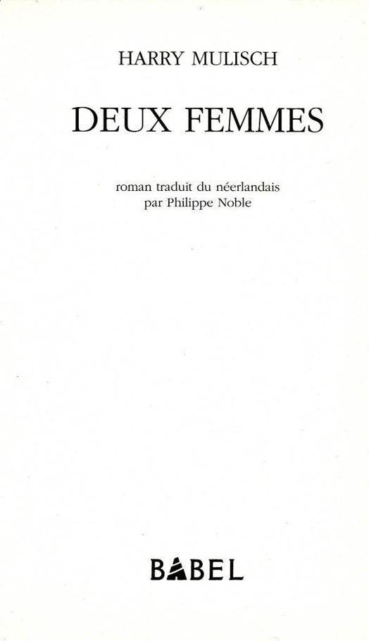

... de nouveau mon cœur frémit
sous Eros,
comme les chênes des monts
sous l’assaut du vent
SAPPHO
Il m’est arrivé diverses choses; il y a eu la mort de ma mère, mais ce n’est pas tout.
Avant-hier, j’étais restée dans mon bureau jusqu’à une heure avancée de la nuit et j’avais bu une bouteille de vin; soudain la fatigue m’ensevelit, comme un parachutiste en touchant terre disparaît dans les plis de sa toile. C’était venu d’un instant à l’autre, je ne pouvais plus ouvrir les yeux. Je laissai tout en plan, éteignis la lumière et descendis tirer le verrou de la porte d’entrée, Dans la boîte aux lettres attendait un avis d’appel téléphonique : il venait de Nice. Je compris tout de suite. La maison de retraite avait imaginé ce stratagème pour me mettre en condition par paliers. D’abord je n’aurais que l’angoisse, puis, m’attendant au pire, j’apprendrais la nouvelle par téléphone. Sans mettre le verrou, je remontai et composai le numéro. Il était près de quatre heures du matin, mais on me répondit tout de suite : oui, elle était morte. L’après-midi, expliqua la directrice (et sa voix en un éclair traversait la France, la Belgique, la Hollande), elle s’était endormie dans le parc pour ne plus se réveiller. Son cœur avait cessé de battre dans le courant de la soirée. Elle n’avait pas souffert.
Qu’en savait-elle ? Elle voulait dire qu’elle-même n’avait pas souffert. En un instant, j’étais dégrisée, l’esprit en éveil. Je connaissais ce parc, le jardin du roi Albert Ier, à cinquante mètres de la mer. On n’y entend plus le ressac et il y règne un silence feutré qui, chaque après-midi, se peuple de vieilles dames et de vieux messieurs venus de toutes les parties du monde. A l’ombre des arbres, sur les pelouses et les allées, ils entrent lentement dans l’éternité au murmure des fontaines, tassés sur eux-mêmes, déjà trop attirés par la terre, affaissés sur les chaises de fer municipales ou leurs pliants de toile, parfois à côté d’un banc où une infirmière est plongée dans un livre. Certains déjà couchés sur des chaises longues, un plaid remonté jusqu’à la poitrine où reposent leurs mains. Autour d’eux flânent de jeunes mères et leurs enfants, qu’ils ne voient plus; leur regard s’envole parmi le vert lumineux et transparent des platanes : dans le frémissement des feuilles, leurs yeux distinguent des tableaux qui disparaîtront à jamais avec eux. Ah, combien de souvenirs se sont abrités sous ces frondaisons ! Décors de maisons de maîtres, conversations dans un jardin d’hiver, scènes de bals masqués, voyages de noces à Baden-Baden !
Sous cette coupole d’images, elle s’était assoupie pour toujours. Je dis que je prendrais le premier avion le lendemain matin, reposai le combiné et jetai un regard par la fenêtre. Quelques années plus tôt, elle était allée à Nice précisément pour y connaître cette fin. Notre dernière entrevue datait de trois mois, nous nous étions quittées sans adieu. Ce qui s’était passé ce jour-là avait probablement déclenché son agonie, et sa mort ne survenait aujourd’hui qu’à titre de confirmation.
La pluie striait obliquement le halo des lampadaires et s’engouffrait dans le trou noir du canal. Les pavés paraissaient plus mouillés que d’ordinaire sous les averses. Devais-je aller me coucher et rester étendue sur le dos, dans la même position que ma mère, là-bas ? Je m’avisai que j’étais déjà en train de compter les heures : si je montais en voiture tout de suite, je pouvais arriver à destination le soir même. Ma mère gisait, froide, le visage de marbre aussi blanc que ses cheveux, peut-être dénoués et étalés en couronne sur l’oreiller blanc, comme chez une personne qui tombe, ce qui faisait d’elle une vieille jeune fille; ses mains blanches indissolublement jointes sur le drap blanc. Ou peut-être l’avait-on exilée déjà vers quelque sombre cave, un drap la couvrant de la pointe des pieds au bout du nez, sous le ronflement du ventilateur en cette chaude nuit d’août.
Dans ma chambre, je sortis de l’armoire la petite valise et commençai à y empiler mes affaires. Un jour elle avait dit qu’elle voulait être enterrée dans le midi de la France, tout près de cette Provence qui avait fourni à son mari la matière d’un livre célèbre où l’amour était réinventé, et qu’elle n’avait probablement jamais lu. Elle connaissait à St-Tropez un cimetière surplombant la mer — il faudrait entreprendre les démarches nécessaires ou du moins essayer, car je ne réussirais probablement pas. Je pris mes chèques de voyage, les papiers de la voiture et mon passeport et je décrochai du porte-manteau mon imperméable. Sous le porche, j’actionnai le verrou de la porte d’entrée, cette fois de l’extérieur. Je pensai : si un minuscule insecte, un bébé fourmi, s’est réfugié dans la serrure pour se mettre à l’abri de l’averse, le mécanisme vient de le broyer.
Sur le quai désert, je levai mes yeux brûlants vers la pluie. Un peu plus loin, vers le centre, bars et night-clubs fermaient et l’on entendait des cris et des coups de klaxon; je ressentais une certaine excitation à l’idée de ce voyage impromptu à l’étranger. Même l’intérieur de la voiture semblait m’accueillir avec quelque étonnement, à cette heure indue.
Un jour j’ai fait une fugue — j’avais dix ans. Il ne s’était rien passé de particulièrement désagréable, l’atmosphère familiale ne me pesait pas non plus, mais je voulais simplement partir loin : il avait peut-être suffi d’un parfum dans l’air, d’un cumulus blanc à l’horizon. Je sortis mon vélo de la remise et traversai la ville, direction le soleil, bien décidée à ne jamais revenir. Dans la campagne je rencontrai des villages dont je connaissais le nom mais où je n’étais jamais allée. C’était l’été, un été de l’enfance c’est-à-dire un été chaud et, au cœur de cet été, une chaude journée sans fin. Je pédalais heure après heure et l’espace s’élargissait sans cesse autour de mon corps, comme lorsque je mettais une des robes de ma mère. Je voulais partir loin, très loin. Mais quand y arriverais-je enfin ? Oui, je crois que je pensais confusément que l’on pouvait arriver à “loin”, que c’était un endroit déterminé, comme la maison que j’habitais. J’avais roulé la moitié de l’après-midi. Loin ne devait plus être très loin. La route, sous mon pneu avant, se fondait en une grise rivière de pierre. Mais les villages continuaient à se succéder, sans cesse il en pointait un autre à l’horizon. Finalement je sentis mes jambes flageoler et la tête me tourner tant j’avais faim et soif, mais je n’avais pas d’argent. J’avais dû penser que cela s’arrangerait “sur place”. Dans un village, je mis pied à terre près d’une charrette de quatre-saisons et attendis que le marchand me tournât le dos pour parler à une cliente. D’un geste vif, j’arrachai une carotte à une botte. Mais la femme avait dû me voir — toujours est-il que le marchand saisit aussitôt mon guidon.
— Alors on chaparde, hein ? s’écria-t-il. Qui t’a permis ? Comment t’appelles-tu ?
— Freddie, répondis-je.
— Freddie comment ?
— Freddie Hoenderdos, monsieur.
— Où habites-tu ?
— Tout là-bas, à Leyde.
— Eh bien c’est du propre ! Allez, file, rentre chez toi, si tu ne veux pas que je le dise à ta mère.
La carotte me fut arrachée des mains et replacée dans la charrette. Je m’avouai vaincue. Loin était peut-être encore très loin. Je fis demi-tour et rentrai chez moi en suivant le même chemin. Le jour rayonnait encore, et la faim et la fatigue étiraient chaque minute aux dimensions d’une heure. Je crois que j’entrai en hypnose. Sous mon pneu avant, la cataracte de pierre se relevait progressivement et je devais la gravir à la verticale. En approchant de Leyde, j’avais l’impression d’être immobile et de devoir, à coup de pédales, faire tourner la terre entière sous mes roues.
Chez moi, la table du dîner n’était pas encore mise. Je pris dans la corbeille quatre pommes que j’engloutis à la suite avec peau et pépins.
— Où étais-tu ? me demanda ma mère de la pièce voisine.
— Chez un copain.
— Lequel ?
— Freddy Hoenderdos.
Elle n’avait même pas remarqué que j’étais partie, et pour toujours en plus !
Si loin de chez moi que je sois allée depuis, jamais ce n’était aussi loin que le “loin” auquel j’aspirais alors. Apparemment je n’avais pas encore bien compris que la terre est ronde et que ce “loin” où je voulais arriver pouvait être, à la limite, la maison paternelle. En revanche, j’étais partie tout naturellement vers le sud, il ne m’était pas venu à l’esprit d’aller vers le nord, en direction de Haarlem. Nord, sud — j’ai toujours une vague conscience de ces points cardinaux. Lorsque je ne les “sens” plus, il m’arrive de les retrouver à l’aide de ma montre, selon une méthode apprise de mon père. La petite aiguille doit être orientée vers le soleil; la bissectrice de l’angle qu’elle forme avec le douze indique la direction du sud.
— Tu comprends ? Sous la véranda, mon père souriait tout en me regardant fixement, comme s’il avait voulu implanter en moi cette compréhension en même temps que le regard de ses yeux bleus. A midi la petite aiguille indique le sud, mais aux autres heures il faut tenir compte du fait que le cadran de la montre est un cercle, tandis que le soleil ne décrit qu’un demi-cercle.
Il a rejoint ses chers troubadours. Mortz es lo reys. Là-haut, du côté des Baux, sur le plateau aux pentes douces qui domine la Provence, il erre parmi les ruines d’une poésie ravagée par Richelieu.
Je crois même que Je passe autrement — mieux — de la cuisine au salon que du salon à la cuisine, non que j’aie rien contre cette pièce mais tout simplement parce qu’elle est au nord. En vacances, je sais toujours où se situe l’extrême pointe méridionale de mon voyage. Lorsque j’allais voir ma mère à Nice, j’avais pris l’habitude de nager le dernier jour très loin au large, n’ayant plus pied depuis longtemps, et je pensais : voilà, j’ai atteint le point le plus au sud, à partir de maintenant c’est le retour qui commence.
Autre sensation familière : lorsque je me tourne vers le soleil, je le vois aller de gauche à droite. Cela dit, j’oublie constamment que la gauche, c’est l’est et la droite, l’ouest; je suis obligée de me réciter mentalement le soleil se lève à l’est pour m’y retrouver, car je n’oublierai jamais, bien sûr, où le soleil se lève. Il m’arrive de demander aux gens qui ont été dans l’hémisphère sud s’il ne leur a pas paru étrange de voir le soleil se mouvoir de droite à gauche, c’est-à-dire en sens inverse des aiguilles d’une montre. Mais jamais personne ne m’a encore répondu : “Oui, bien sûr”. Personne ne semble s’en être avisé — tandis que moi, si des ravisseurs me droguaient et me transportaient dans l’hémisphère sud, je m’en apercevrais en une demi-heure au seul mouvement solaire. Certains croient que je veux dire que le soleil, au-dessous de l’équateur, se lève à l’ouest et se couche à l’est. C’est pour moi une énigme, de constater combien peu de gens possèdent un sens inné de ces sortes de choses. La marche de l’astre solaire de gauche à droite, en passant par le sud, est gravée dans mon corps comme la croix de métal dans un moule à fonte.
Freddy Hoenderdos était dans ma classe au cours moyen. Pourquoi avais-je donné son nom plutôt qu’un autre au marchand de légumes qui marqua le terme de mon escapade ? Ce n’était pas parce que je le détestais; je le détestais bel et bien, mais ma réponse avait fusé trop vite pour être réfléchie. Son nom m’était venu à la bouche tout naturellement, comme si c’était vraiment le mien.
Je l’ai revu pour la première fois il y a trois semaines seulement. J’étais assise sur les marches du monument du Dam1 au milieu de quelques centaines de garçons et de filles à peine plus âgés que moi au moment de ma “fugue”. Seulement, eux avaient persévéré, ils étaient venus des quatre coins du monde pour former en plein centre d’Amsterdam cette troupe fantastique et bigarrée. L’espèce de pylône blanc qu’ils entouraient, les uns assis, les autres couchés, était en quelque sorte la matérialisation du “loin”. Çà et là on grattait la guitare, on jouait doucement de la flûte, et je détonnais tout à fait, bien sûr, en telle société. Je devais avoir l’air ridicule, j’étais sans doute même plus âgée que les policiers qui surveillaient le groupe, derrière les vitres de leur petit car bleu, garé dans une rue adjacente. Cet après-midi-là, j’étais allée m’asseoir parmi ces garçons et ces filles parce que je me heurtais dans ma vie à une impasse. Au Moyen Age, on croyait qu’un syphilitique pouvait guérir en dormant avec une vierge : par une superstition similaire, j’espérais en me mêlant à ces jeunes gens m’approprier un peu de leur force et de leur liberté. Le soleil brillait sur cet îlot paradisiaque cerné par les remous de la circulation, par sa puanteur et ses coups de colère, et c’était comme si, peu à peu, mon problème devenait plus impersonnel. Jusque-là, l’amour que j’éprouvais n’avait cessé de claquer au vent comme une voile déchirée; cet après-midi-là, dans l’accalmie de cet atoll, il me semblait qu’enfin la voile descendait, que je pouvais la saisir et la carguer.
L’homme d’âge moyen qui s’était arrêté depuis un moment sur le trottoir d’en face pour me regarder, traversa et vint droit sur moi. Il portait un blouson d’allure démodée, une sorte de canadienne, et un pantalon marron foncé qui provenait visiblement d’un costume; de toute évidence, ce n’était pas sa tenue habituelle.
— Enfin, c’est toi ou ce n’est pas toi ? demanda-t-il en laissant tomber son regard sur moi.
Ces cheveux pâles, vaguement roux !
— Freddy Hoenderdos ! dis-je, mais sans me lever. Je le regardai en hochant la tête, Nul sourire n’éclaira son visage, pas plus que le mien.
C’était la leçon de dessin géométrique; monsieur Verheul traçait au tableau une drôle de figure : un grand cercle ou une grande sphère d’où émergeait un cylindre vertical. Freddy Hoenderdos, assis de l’autre côté de l’allée, se tourna dans ma direction, hilare. Je me penchai vers lui et chuchotai :
— On dirait la quéquette de Verheul.
Aussitôt, il leva le doigt.
— M’sieur !
— Oui, Hoenderdos ?
— Elle dit des saletés !
— Quoi donc ?
— Je n’ose pas le répéter tout haut.
— Alors viens me le dire à l’oreille.
Freddy s’avança et, la main devant la bouche, se mit à chuchoter à l’oreille de Verheul. Tandis qu’il parlait, l’instituteur me fixait et je vis son regard changer. Il se leva et ouvrit la porte.
— Viens un instant dans le couloir, toi !
Il referma la porte derrière moi, croisa les bras et me dévisagea en silence; chaque seconde augmentait douloureusement la sensation que j’avais de la présence de son sexe, tapi dans les replis de son vaste pantalon hollandais.
— Tu as vraiment dit ça ?
— Oui, Monsieur.
— Et tu sais ce que ça signifie ?
Que voulait-il dire ? Je savais ce qu’était une quéquette, même si je n’en avais pas. Soudain j’eus l’impression que Freddy lui avait chuchoté tout autre chose que mes paroles, mais je n’osai pas le lui demander.
— Oui, Monsieur.
— Alors va chez monsieur Donker.
Dans le couloir désert, entre les rangées de manteaux, j’allai jusqu’au cours supérieur, la classe du directeur de l’école.
— Eh bien qu’y a-t-il ? demanda-t-il, l’air absent.
— J’ai été insolente envers M. Verheul, dis-je sous les ricanements méprisants des “grands”.
— Chez mademoiselle Borst ! fit Donker sans lever les yeux.
Mademoiselle Borst enseignait au cours élémentaire; pour rejoindre sa classe, je devais monter l’escalier badigeonné de jaune.
— Qu’est-ce que tu veux ?
— C’est M. Donker qui m’envoie.
Tandis que les petits se mettaient à glousser, Borst leva sa main de boucher et agita lentement son épais index pour me signifier d’approcher. Je montai sur l’estrade de bois, fermai les yeux et reçus au même instant une formidable gifle.
— File. Et que ça ne se produise plus.
Elle ne savait même pas ce qui s’était passé, et d’ailleurs, en sa qualité de bourreau, n’avait pas à en connaître.
Lorsque je regagnai la classe, Freddy, les mains dans les poches, jeta un regard satisfait à ma joue rouge,
— Freddy..., dit-il. Il y a longtemps que je n’avais pas entendu ce nom.
— On dit Fred aujourd’hui ?
Il ne réagit pas.
— C’est une habitude, chez toi, de traîner ici ?
— Oui, tu y trouves à redire ?
— Au milieu de ces épaves droguées !
— Est-ce que par hasard tu serais de la police, Freddy ? D’un signe de tête, je désignai les cars aux vitres grillagées.
Il se tourna en étirant le cou, comme si le col de sa chemise l’avait trop serré; pourtant il était ouvert.
— Et toi ? demanda-t-il.
— Que veux-tu dire ?
— Qu’est-ce que tu fais dans la vie ?
— Je suis conservatrice d’un musée. Et toi ?
— Quelque chose dans ce genre-là.
Il n’avait pas changé : toujours aussi impénétrable, aussi dissimulé.
— Il t’arrive encore de tenir des dindons à deux mains ?
Il me regarda en levant les sourcils. Je ne dis rien de plus. S’il voulait faire des mystères, je le pouvais aussi. Je constatai avec plaisir que je l’avais un peu troublé. Il consulta sa montre.
— Bien sûr, tu es très occupé, dis-je. Je ne voudrais surtout pas te retenir.
Il me fixa quelques secondes, fit un petit salut de la tête et s’éloigna sans un mot. Je le suivis des yeux tandis qu’il traversait une rue, puis une autre, disparaissait en longeant le palais — et sortait probablement de ma vie pour toujours.
Cette rencontre ne me plaisait pas, elle m’avait rendue à mon agitation. Au devant de quoi m’envoyait-il, une fois de plus ?
1 Ce monument élevé à la mémoire des résistants et des victimes de guerre était devenu, au début des années soixante-dix, l’un des points de ralliement des “hippies” européens.
Un matin, ma mère avait fait chauffer de l’eau pour le thé, lorsque mon père lui dit qu’à la réflexion, il préférait du café. “Bien”, fit ma mère; elle jeta l’eau bouillante dans l’évier et remplit de nouveau la bouilloire. Le fou rire me secouait mais mon père prétendit qu’il n’était pas ennemi d’une stricte démarcation entre eau-à-thé et eau-à-café :
— Qui sait si le café, autrement, n’aurait pas un léger goût de thé ?
J’essayais de penser à ma mère, mais sans y parvenir, je ne m’abusais pas sur ce point. Je saisissais plutôt l’occasion de sa mort : je veux dire qu’en un sens j’étais heureuse d’avoir tout à coup d’autres préoccupations, d’être obligée de partir à l’étranger et de détourner un peu mes pensées de ce qui les obsédait. Lorsque le jour commença à poindre, j’avais déjà franchi la frontière. J’avais laissé derrière moi les patinoires à huit voies qui ceinturent Anvers (détrempées et vides : dimanche matin) et, au delà de Gand, je roulais entre les premiers vallonnements. Là où apparaissent les collines cesse la Hollande, l’œuvre humaine, l’empire sur les choses : là commence le monde, le donné brut. En ce point où la morale fait place à la nature, je sens toujours m’envahir une gravité d’un genre inconnu en Hollande. Elle monte en moi au rythme de la terre qui s’élève autour de moi. En moi aussi, elle sourd de couches plus profondes, plus dures, plus primaires — recouvertes à Amsterdam par cent mètres de boue.
Ah, les chantiers de construction à Amsterdam ! Vacarme vibrant des pompes qui empêchent l’eau d’envahir la fosse entre les parois de métal suintantes d’humidité; ouvriers qui, tout au fond, pataugent jusqu’aux genoux dans la vase; pilotis de béton qu’il faut ficher dans un gouffre si l’on veut éviter que l’immeuble ne s’enfonce chaque année dans la gadoue, jusqu’à ce que la Hollande, en gargouillant et clapotant, se referme sur le toit. Si notre civilisation vient à s’effondrer, les touristes ne viendront pas admirer nos fières ruines, car Amsterdam disparaîtra comme, sur les plages, les châteaux de sable des enfants à la marée montante.
Sous la fenêtre de la chambre où j’écris en ce moment s’ouvre aussi la fosse béante d’un chantier. Des dizaines d’hommes coiffés de casques jaunes, un short pour tout vêtement, percent la roche au marteau pneumatique; l’excavation atteint déjà cent mètres de long, cinquante mètres de large et vingt de profondeur. Elle s’avance tout près de la maison, laissant un étroit passage d’à peine un mètre et demi. Autrefois ce devait être une place. Des bulldozers mugissants râclent les gravats puis ouvrent leurs gueules de tyrannosaures et les laissent tomber avec fracas dans la benne des camions, qui les emportent lentement au milieu de nuages de poussière jaune. Je crois que c’est du calcaire. Le soleil déverse sa lumière sur ce tumultueux ravin.
Heureusement, l’écrit n’a pas besoin de la voix humaine pour être audible. Même le plus discret des mots que je mets sur le papier, le mot silence par exemple, suffit à couvrir le vacarme infernal de cette fosse de pierre.
Silence.
— Je te préviens, dis-je, peut-être dix minutes après l’avoir abordée, je ne suis pas du genre bavard.
— Moi non plus, fit-elle.
Qu’est-ce qui me prenait ? C’était le genre de déclaration solennelle qu’un pauvre type tient à une paumée comme lui, qu’il vient de rencontrer au buffet de la gare parce qu’elle a répondu à sa petite annonce et qu’aussitôt ils ont décidé tous deux que ce serait pour la vie. Elle aussi sentait visiblement que ce n’était pas une rencontre ordinaire; et moi, il m’avait suffi de la voir de dos pour le comprendre.
J’avais acheté du pain. C’était un samedi après-midi, un mince soleil de février luisait sur la ville. De l’autre côté de la rue, je l’aperçus devant la vitrine d’un joaillier. Je m’arrêtai. Je regardai son dos, sa nuque et ses mollets qui dépassaient de bottes rouge vif, et au même instant, je me demandai pourquoi je m’arrêtais et la regardais. On aurait dit que tout, dans la rue, s’était estompé ou déformé, comme sur certaines photos, et que seule cette fille, au centre, avait gardé des contours nets. Pourtant, vue de dos, sa beauté n’avait rien d’extraordinaire : les cheveux étaient relevés avec une négligence pleine de charme, mais l’échine était un peu trop longue, les hanches trop étroites, et les jambes un peu moins rectilignes que ne l’exigent les canons habituels du corps féminin. Mais ces imperfections allaient toutes dans le même sens, et ce sens, mystérieusement, était fait pour mes sens. Tout corps humain est un ensemble de messages; on s’accorde à le reconnaître des yeux, de la bouche, ou des mains; mais les pieds, la nuque, les mollets tiennent eux aussi un langage, et qui ignore le mensonge. Enlevez la tête et les bras, il n’en reste pas moins un message idéal, qui a sa place au Louvre.
Je traversai. Je haletais un peu, tout à coup. Jamais encore je n’avais eu si aiguë, et si soudaine, la sensation de me lancer dans une entreprise qui allait changer ma vie. Je n’avais jamais eu d’aventure avec une femme et sur le moment je compris à peine que j’y courais tout droit. Je croyais encore, probablement, obéir à l’impulsion de quelque sentiment platonique, esthétique, puisé dans l’histoire de l’art ou dans les livres.
— Elles te plairaient autant, ces pierres, si elles n’étaient pas si rares et si chères ?
Je m’étais plantée à côté d’elle. Mon cœur battait la chamade. Elle me jeta un regard étonné, effrayé même, mais à l’instant, les nuages de peur et d’irritation disparurent de son visage, me révélant ses traits.
Rétrospectivement, j’imagine que ce visage répondait exactement à mon attente et que, si j’avais dû le reconstituer grâce à des méthodes comparables à celles de la police d’après ce simple regard porté sur son dos, j’aurais touché juste, dans les moindres détails. Tout être humain recèle en lui une certaine courbe, qui se répète partout dans son corps et constitue l’expression de sa nature. Chez ma mère, les paupières supérieures dessinaient un “S” allongé, qui réapparaissait aux commissures des lèvres, déterminait le profil du cou et le contour des hanches et que, de surcroît, elle réintroduisait elle-même dans les crans de sa coiffure. Chez celle que je côtoyais à présent, c’était un orbe fuselé et aplati du haut dont je ne connais qu’un autre exemple, un hiéroglyphe égyptien. Cette figure se devinait dans ses mollets, mais aussi dans ses yeux et sa bouche et même dans les motifs de son tee-shirt : de petits bateaux. Son visage me faisait penser à Giotto et aux personnages de certaines fresques siennoises d’Ambrogio Lorenzetti. Ses mains étaient nerveuses et garçonnières, ses ongles rongés : je décidai immédiatement que cela devait changer.
— Oh, je n’ai pas du tout pensé à leur valeur.
C’était le genre de commerce qui se suffit d’un client par jour. La vitrine était tendue de beige; sur le velours vert tilleul du présentoir, une poignée d’objets sans indication de prix. Elle montra du doigt une petite chouette d’or sommairement travaillée, aux ailes d’émeraude, la tête piquée de diamants avec deux topazes pour les yeux. Elle était presque trop belle pour le regard. A présent que tout est fini, je revois cet oiseau plus nettement que son visage dont je ne perçois qu’un seul profil — l’autre moitié devenue invisible, à la manière d’un miroir.
— On fait quelques pas ensemble ? demandai-je.
— D’accord.
Je me faisais l’effet d’un dîneur qui, au restaurant, a commandé un homard mais ne sait comment le déguster. Nous marchions côte à côte, en silence; pour une raison mal définie, je me sentais gênée de ce pain que je portais sous le bras. Il semblait indiquer une tout autre direction que celle où je venais de m’engager, la perspective d’un week-end sans histoires où je me proposais surtout de dormir et peut-être de lire un peu. Il me paraissait déjà inconcevable que les événements suivent ce cours, qu’elle dise l’instant d’après “Salut, il faut que j’y aille” — et qu’il ne me reste plus qu’à terminer mes courses.
— Tu habites Amsterdam ? demandai-je.
— J’aimerais bien !
— Où, alors ?
— A Petten.
Elle faisait sonner le “p”, comme pour dire “peuh !”.
— Comment t’appelles-tu ?
— Sylvia.
Elle répondait avec patience à toutes mes questions mais n’en posait aucune.
— Tu travailles ?
— Oui, dans un salon de coiffure, à Egmond.
— Et ton père ? Qu’est-ce qu’il fait comme métier ?
Il allait apparemment de soi que je reçoive aussi cette information :
— Il est gardien de digue au Conseil des Polders.
— Oh, mais c’est passionnant !
— Oui, tu parles !
— Non ?
— Je voudrais te voir vivre là-bas !
Son père était le gardien du barrage maritime de Hondsbos2 ! Je revis les trois digues parallèles, la Veilleuse, la Dormeuse, la Rêveuse, chargées de repousser la violence des éléments extérieurs; et dans les antiques vestiges de la Rêveuse on avait construit un réacteur nucléaire qui devait, lui, contenir sa violence intérieure. Petten me paraissait soudain le nombril de la Hollande, l’unique lieu qui eût pu lui donner le jour.
Il faisait froid. Toujours côte à côte, nous marchions par des rues où rien ne nous appelait. Pas plus que tout à l’heure je ne voyais clairement ce que je voulais, sinon continuer de marcher à côté d’elle comme un chien à côté de son maître — un chien d’aveugle, il s’entend, car le maître ne prenait aucune initiative.
— Où va-t-on ? demandai-je.
— Où tu voudras.
— Tu as quelque chose de spécial à faire aujourd’hui ?
— Non. J’ai pris un jour de congé.
Et moi, avais-je rien de spécial à faire ? J’avais été mariée sept ans et mon divorce remontait à cinq ans. Je faisais mon travail au musée et mes visites à ma mère me tenaient lieu de vacances. De temps à autre, je couchais avec un homme rencontré ici ou là. D’ordinaire nous allions chez moi. Je ne voulais pas de relations suivies; d’ailleurs, les hommes qui en auraient souhaité avaient le plus souvent charge de famille et, le week-end — “comprends-moi, ma chérie, moi non plus je ne demanderais pas mieux” — ils étaient généralement empêchés. J’allais au concert, à des vernissages, parfois au théâtre. Il m’arrivait aussi d’aller voir des amis, mais de moins en moins souvent. Deux soirs par semaine je dînais en ville, et le dimanche je ne m’habillais pas. Pourtant je ne m’étais jamais inquiétée du cours qu’allait prendre ma vie. J’en avais à peu près atteint la moitié — mais après ? La perspective de glisser insensiblement de la vie active à la retraite sous les traits d’une vieille dame seule, grisonnante et distinguée, ne m’effrayait nullement, car ce n’était pas une perspective : cet avenir n’existait pas, tout simplement. J’avais toujours été persuadée qu’il se produirait un beau jour un événement subit, mais seulement si je ne cherchais pas à le provoquer. Tout ce vers quoi l’on dirige son attention et sa volonté devient invisible, du moins si j’en crois mon expérience. On ne voit vraiment les choses que du coin de l’œil, lorsqu’on est en fait absorbé par d’autres occupations. On dirait qu’alors la réalité se sent dédaignée et, piquée au vif, s’impose à vous.
— On va prendre un verre chez moi ? demandai-je.
— D’accord.
2 Cet ensemble de digues, long de plus de cinq kilomètres, s’élève au nord de la Hollande entre les villages de Kamperduin et de Petten. Il remplace un cordon de dunes qui s’est effondré lors d’un raz de marée en 1421, engloutissant le village de Hondsbos.
— Tu as de jolies choses, remarqua-t-elle ; sur le canapé, elle se roulait une cigarette.
— Cela vient avec l’âge.
Mais elle ne s’enquit pas de mon âge. J’ouvris la bouteille de bière, servis deux verres et m’assis en face d’elle.
— Tu veux en rouler une ? demanda-t-elle en me tendant son paquet de tabac.
— Depuis le temps, j’ai un peu perdu la main. Je sortis une feuille de papier à cigarette et y étalai une pincée de tabac. Mes mains tremblaient et elle le vit.
— C’est ton habitude de draguer des filles dans la rue ?
— Tu ne vas pas me croire, dis-je sans lever les yeux, mais tu es la première fille que j’aie jamais draguée.
— Tu es mariée ?
Elle montrait un calme de façade. De nous deux, celle qui se laissait séduire, c’était moi. Pour comble, le tabac glissa de la feuille et tomba par terre.
— Je l’ai été, il y a un moment déjà, dis-je en me penchant pour le ramasser. Peu m’importait ce qu’elle pensait de moi : j’étais sous son emprise et m’en trouvais fort bien.
— Tu n’as jamais fait l’amour avec une fille ?
— Non, dis-je.
— Sans blague 3?
J’éclatai de rire.
— Sans blague, dis-je. Et toi ?
— Moi oui.
— Et avec un garçon ?
— Aussi.
— Alors, homme ou femme, pour toi cela n’a pas d’importance ?
— Pourvu qu’ils soient gentils.
Tout compte fait, c’était une réponse très spirituelle et d’une parfaite noblesse.
— Et c’est un Français ou une Française, que tu as connu ?
— Un Français. On va au lit ?
Je reposai sur la table le papier à cigarette avec son petit tas de tabac. J’étais totalement désorientée, comme perdue dans une forêt obscure mais chaude et humide et embaumant le jasmin. Sans un regard vers elle, je me levai et allai tirer les rideaux, tout en murmurant :
Nel mezzo del cammin di nostra vita
Mi ritrovai per una selva oscura.
Je me déshabillai dans la plus grande confusion. Je ne savais plus où j’en étais. J’étais si excitée que je pensai m’oublier. Quand je ressortis de la salle de bains elle était agenouillée nue sur mon lit; dans la lumière rouge foncé filtrée par les rideaux, elle me regardait en suçant son pouce. Elle avait une finesse de hiéroglyphe; autour de nous, derrière les rideaux et les murs, la ville s’étalait dans l’hiver.
— Si tu mettais un disque ? demanda-t-elle.
Un disque. Pas le moment de sortir Xenakis ou Monteverdi. Satie peut-être ? Les Gymnopédies ? Par bonheur je retrouvai dans le lot un vieux Peggy Lee. Je m’approchai d’elle et c’était comme si je franchissais une frontière, perçais une muraille. C était une sensation comparable à cette odeur qu’il m’arrive de sentir une fois en quelques années — ou plutôt que je ne sens pas vraiment, que je crois sentir et qui me rappelle une odeur probablement sentie un jour, en des temps lointains. Une bouffée qui vous surprend dans une ruelle, dans l’escalier d’un petit hôtel, quelque part à l’étranger, à Venise, mais qui s’évanouit aussitôt et qu’on ne peut ressaisir, même en revenant sur ses pas. Une odeur sombre, chaude, de pain frais et de sang caillé, qui ouvre une brèche, une fissure, vers un tout autre monde, un monde oublié.
— Tu es maigre. J’aime bien, dit-elle.
Nous nous détachâmes de la chambre et du jour pour nous enkyster et rouler comme une amibe dans l’immensité de la mer. Je n’en conserve aucun souvenir, c’est resté là-bas à l’horizon de ma vie, en février, il y a six mois — une tache aveugle, le point par où les nerfs quittent l’œil.
Nous restâmes étendues encore un moment. Son corps était si doux que je ne sentais pas où il commençait. Elle était couchée sur le flanc et, à côté d’elle, j’avais la tête appuyée sur la paume de ma main. J’avançai lentement un doigt tendu vers ses fesses de jeune garçon, mais j’avais beau voir le bout de mon médius s’enfoncer dans sa chair, je ne sentais toujours rien.
— Tu sais que je ne prends presque jamais de congé ? dit-elle. On aurait dit que je le savais.
Elle se redressa :
— Tu ne veux pas que j’arrange tes cheveux ? Ils sont pleins de pointes mortes. Est-ce que tu as au moins de bons ciseaux ? La plupart des gens n’ont que des saletés.
Sous la douche, la tête penchée sur le rebord de la baignoire, je la laissai me laver les cheveux; l’instant d’après j’étais installée sur Une chaise, une serviette sur les épaules, tandis qu’elle s’affairait en silence autour de moi. Je ne parlais pas non plus. Toutes deux, nous étions encore nues. Lorsqu’elle débrancha le sèche-cheveux en disant “Voilà, madame”, je lui demandai :
— Tu viens vivre chez moi, Sylvia ?
— Si tu veux.
— Oui, je le veux !
— Alors oui.
Nous nous rhabillâmes et sortîmes dans une ville lavée de frais, régénérée. Maître et esclave côte à côte : elle le maître et moi l’esclave. Dans mes courses pour le week-end, j’en étais restée à un demi-pain complet et je proposai d’aller dîner d’une fondue bourguignonne. Elle n’en avait jamais mangé. Les rues, le restaurant, les serveurs, les tables, les convives, tout respirait le charme et la beauté. Ce n’était pas le fait du monde, mais le sien, le nôtre. Seuls les très jeunes enfants, peut-être, sont capables d’appréhender les choses avec cette sorte d’émerveillement et n’ont pas besoin pour cela de l’intervention d’autrui, parce qu’ils sont l’amour même.
Tandis que, de part et d’autre de la marmite noircie, nous attendions l’ébullition de l’huile, nous nous consultions sur la meilleure façon de présenter la situation à Petten.
— Il ne faut surtout pas qu’ils sachent, dit Sylvia, mon père serait capable de me faire ramener par la police.
— Eh bien... tu as décidé de venir habiter seule à Amsterdam. Aujourd’hui tu as trouvé une chambre chez moi. Je suis ta logeuse.
— Et s’il demande comment je paie mon loyer ?
— Tu as trouvé un emploi ici chez un coiffeur de luxe. Dans la Beethovenstraat. Ou à l’hôtel Hilton.
— Et j’aurais réglé tout ça en une journée ?
— Non, bien sûr. Au contraire : tu t’en occupes depuis des mois, mais tu n’as rien voulu dire avant d’être sûre de réussir. Tu en faisais une affaire d’honneur.
— Tu sais la réaction de mon père ?
— Non ?
— Il va rigoler. Il sait très bien que ce n’est pas mon genre. Non, j’ai trouvé, tiens. Pour commencer, je ne donne pas signe de vie pendant une dizaine de jours. Ça ne sera pas la première fois. Puis je rentre à la maison et je dis que j’ai rencontré un étudiant et que je m’installe chez lui.
— Et s’il demande qui est cet étudiant ?
Elle piqua un petit morceau de viande au bout de sa fourchette et le brandit en souriant.
— Je dirai que c’est ton fils !
Sa viande disparut dans l’huile en crépitant. Je ne trouvai pas de réplique et plongeai à mon tour une bouchée dans la marmite.
— Comment allons-nous appeler mon fils, Sylvia ?
— Thomas, répondit-elle avec gravité, comme si elle y avait déjà mûrement réfléchi.
— Ça doit être à point maintenant, dis-je.
Elle sortit le morceau de viande de l’huile bouillonnante mais, au lieu de le déposer dans son assiette et de le piquer avec l’autre couvert pour l’enduire de sauce froide, elle le porta directement à la bouche; je vis ses lèvres coller à l’acier de la fourchette et blanchir immédiatement. Mais elle ne poussa pas un cri et son visage demeura impassible, les yeux fixés sur moi.
3 En français dans le texte.
Dix jours plus tard, lorsqu’elle retourna à Petten annoncer à ses parents ses “fiançailles” avec Thomas, sa lèvre était guérie. Elle revint le soir même avec une grande valise bourrée de vêtements et d’affaires.
— Comment ça s’est passé ?
— Bien, évidemment.
Elle trouvait le sujet trop insignifiant pour y consacrer un mot de plus. Ses parents avaient disparu de ses pensées dès l’instant où elle avait refermé la porte derrière elle. Elle plaça une poupée sur le couvre-lit et suspendit ses habits dans l’armoire, inutilisée depuis cinq ans. Il n’y restait que quelques vieilles chemises d’homme; elle en passa une aussitôt.
Les premières semaines, nous ne sortions presque pas. Nous nous suffisions l’une à l’autre, et puis je ne savais pas encore très bien quelle attitude prendre si nous venions à rencontrer quelqu’un. Certes je n’avais rien à cacher, mais je trouvais plutôt piquant de laisser ma nouvelle vie se dérouler dans l’ombre. Le matin, je lui apportais le petit déjeuner au lit; à l’heure où je partais travailler au musée, elle s’était généralement rendormie. A onze heures, je téléphonais pour la réveiller et quand je rentrais entre midi et deux heures, la maison embaumait le café, le couvert était mis et des petits pains frais m’attendaient. L’après-midi elle allait en ville, faisait les boutiques ou allait au cinéma; si elle ne sortait pas, elle se cousait des habits ou restait étendue par terre, à lire un livre. Elle adorait la littérature néerlandaise moderne, sans doute parce que celle-ci, à une ou deux exceptions près, se compose exclusivement d’une espèce plus ou moins améliorée de livres pour grands adolescents, qu’on ne lit plus au delà de vingt-cinq ans. Le soir nous faisions la cuisine ensemble et, après dîner, nous lisions ou regardions la télévision. Elle aimait lorsque nous nous caressions devant le petit écran sous l’œil tristement compréhensif du prêtre ou du pasteur chargé de clore les émissions de la journée. Elle entreprit également de combler les lacunes en pop-music de ma discothèque. Au bout de quelque temps, elle ne se rongeait plus que les ongles de la main droite; ceux de la gauche étaient devenus longs et pointus.
— Allons nous promener, dit-elle tout à coup un dimanche après-midi, Nous allons nous prendre en photo.
J’aimais ces inspirations soudaines; nous emportâmes mon appareil et nous dirigeâmes vers le zoo. On était en mars; il faisait encore froid, mais il y avait déjà un peu de monde.
— Chacune choisit l’animal avec lequel elle veut être photographiée !
Cela me parut une bonne idée.
— Moi, je vais là-bas, dis-je. Près des oiseaux
— Pourquoi les oiseaux ?
— Parce qu’ils prédisent l’avenir.
Elle me prit en photo à côté d’une espèce de fou à bec rouge et à huppe blanche.
— Toi aussi ? lui demandai-je.
Elle fit “non” de la tête.
— Je ne veux pas savoir l’avenir. Je verrai bien assez tôt ce qu’il me réserve.
— Près d’une chouette, alors. Tu te rappelles notre petite chouette d’or ? Les chouettes sont la sagesse même, elles prédisent le passé.
— Oui, une chouette.
Mais nous n’en trouvâmes pas dans la volière, ni ailleurs, Pendant que nous cherchions, elle me prit en photo près des cerfs, des zébus et de l’ibis rouge, mais ne découvrit quant à elle aucun animal avec qui poser.
— Même pas ce puma ?
— Il est superbe, dit-elle. Tu as vu sa démarche ?
Il avançait comme s’il n’avait pas eu de poids, comme si la terre n’était pas un élément dur et rebelle.
— Pourtant je ne veux pas que tu me prennes avec lui.
— Alors avec un moineau, peut-être ?
— Allons plutôt voir là-bas, à l’aquarium.
Mais il était fermé.
— Alors avec lui, dit-elle en montrant l’effigie en béton d’un tyrannosaure qui se dressait sur la pelouse, face à l’entrée.
Elle alla se placer près de la statue dans une pose affectée et anguleuse imitée des mannequins et je la pris en contre-plongée.
— Je commence à avoir froid, dit-elle. Allons au vivarium voir les reptiles.
— Oui, ici ! Ici ! s’écria-t-elle dès que nous eûmes pénétré dans l’atmosphère humide, tropicale. Il te reste combien de photos à prendre ?
— Six.
J’en fis quatre : Sylvia près des crocodiles, des serpents, des iguanes et des lézards, et je ne risquais pas de les voir bouger et rendre la photo floue. On aurait dit que leur passé immémorial leur avait conféré la fixité pierreuse de l’histoire même : leur immobilité suggérait une existence éternelle.
— Et maintenant, nous deux, dit Sylvia. Elle me prit l’appareil des mains et se dirigea vers un garçon de son âge, qui passait juste à ce moment-là.
— Ça ne t’ennuie pas de nous prendre ?
Elle lui montra où était l’obturateur, glissa son bras sous le mien et regarda l’objectif en souriant, Quand ce fut fait, elle revint vers lui, reprit l’appareil et, cette fois, saisit le bras du garçon. “A notre tour” , dit-elle en me tendant mon appareil.
Je ne pus m’empêcher de rire : après tous ces sauriens, nous avions trouvé la plus singulière des créatures : un homme ! Je les photographiai et, en remerciement, elle déposa un baiser sur la joue du garçon.
Au bout de quelque temps nous commençâmes à sortir ensemble, le plus souvent au concert, parfois à un spectacle de cabaret ou au cinéma. La plupart des gens étaient au courant désormais. Je cessai de voir les amis que j’avais, et eux non plus ne me donnèrent bientôt plus signe de vie. Ils ne me manquaient pas, Sylvia suffisait à me combler. Et quant aux hommes — en dehors de ceux que nos relations laissaient indifférents et qui nous traitaient normalement — je lus dans leurs yeux deux réactions : une lueur grivoise allumée par la pensée de ces deux filles, mais plus souvent la haine, la rage de se sentir niés, exclus, anéantis.
— Musée Zinnicq Bergmann.
— Bonjour, Boeken à l’appareil. Pourrais-je parler à madame...
— C’est elle-même.
— Oh pardon, je n’avais pas reconnu ta voix.
— Il est vrai que tu ne l’entends plus si souvent.
— Comment ça va ?
— Très bien, et toi ?
— Bien, bien, beaucoup de boulot. Ça fait un moment qu’on ne s’est vus.
— Pourquoi se verrait-on ?
— Comment va ta mère ?
— Pas très fort, elle baisse beaucoup.
— Il t’arrive encore d’aller la voir ?
— Deux fois par an, comme toujours.
— La prochaine fois, tu voudras bien lui transmettre mon bon souvenir.
— Promis.
— Et dis-lui que je pense souvent à elle, et à son mari.
— Quelle délicate attention, Alfred.
C’est pour me dire cela que tu m’appelles ?
— Non. Tu sais très bien pourquoi.
— Allons, ne me fais pas languir, chéri.
— On raconte que tu es devenue lesbienne.
— Tiens donc ?
— Alors, ce n’est pas vrai ?
— Si on prétend que je vis en ce moment avec une jeune fille, c’est exact.
— On le prétend, oui.
— C’est fou ce que les gens peuvent colporter de ragots. Des filles et des femmes qui vivent ensemble, il y en a pourtant des milliers.
— C’est carrément ton amie ?
— Carrément, carrément... Qu’est-ce que tu appelles “carrément” ?
— Ou bien tu lui as seulement loué une chambre ?
— Non, non, je la loge gratuitement. Je lui donne même de l’argent.
— C’est du joli. Et depuis quand dure cette comédie ?
— Ah oui, une “comédie” bien sûr : tu ne cannais que ça. Cela n’a rien d’une comédie. C’est un être tout à fait à part et je la connais depuis un mois ou deux. Mais je ne vois pas en quoi cela te regarde.
— Quel âge a-t-elle ?
— Si je te dis seize ans, ça t’excite ? Ou tu préfères vingt-six ?
— Cela ne m’excite pas le moins du monde.
— Je n’en suis pas si sûre, Alfred.
— En voilà des idées ! C’est plutôt toi qu’elle excite, non ?
— Tu as raison. Elle a vingt ans.
— Si tu veux mon avis, cette histoire ne tient pas debout. Tu n’es pas du tout lesbienne.
— Alors n’emploie pas ce mot.
— Mais dans ce cas, pourquoi vis-tu avec une femme ? C’est l’âge ou quoi ? Je me rappelle que...
— Puisque tu es si galant, je me le rappelle aussi : une nuit tu es rentré complètement bourré avec je ne sais quelle traînée, et tu aurais bien voulu nous voir à l’œuvre toutes les deux. Et toi, bien sûr, tu te serais installé dans un fauteuil, cigare au bec, pour observer la suite des événements. C’était bien le niveau de tes prouesses, même alors.
— Ouais ! Mais toi, tu as pris ton oreiller et tu es allée dormir sur le canapé.
— Exactement. Et toi, tu as renvoyé à la rue cette pocharde.
— Quoi ?
— Oui, tu as bien entendu.
— Donc, tu n’es pas lesbienne,
— Alors, arrête de me lancer ce mot à la figure !
— Mais enfin tu vis avec une fille, oui ou non ? C’est quoi, ce petit jeu ?
— Cherche, si ça t’amuse. Et je te souhaite beaucoup de bonheur avec ta femme et tes deux enfants.
— Sans compter que ce n’est pas très flatteur pour moi.
— Ah, nous y voilà ! Est-ce qu’ils te regardent d’un drôle d’air, en te disant que je suis devenue lesbienne ? Ils pensent probablement qu’après toi, tous les hommes me sortaient par les yeux.
— Tu ne pourrais pas baisser d’un ton ?
— Si tu veux, Tu n’auras qu’à leur répondre qu’après toi, aucun homme ne pouvait plus me satisfaire, Tu n’as jamais été en peine d’explications, tu en as même fait ta profession.
— Suivant en cela l’exemple de ton père.
— Bien sûr, c’est sa faute !
— Mais j’y songe : c’est peut-être parce que tu ne peux pas avoir d’enfants ?
Un instant, je restai sans voix. Quand j’eus trouvé une réplique, je me ravisai et raccrochai.
Dans un petit magasin de produits exotiques, nous achetâmes deux bagues turques formées de quatre anneaux tressés. Ils étaient réunis par un mince fil qu’on ne devait enlever qu’une fois la bague passée au doigt, De retour à la maison, Sylvia le dénoua’ ‘pour voir”, et aussitôt la bague se décomposa en une chaîne de quatre maillons. Il fallut une demi-heure pour la reconstituer — et lorsque ce fut fait, on sonna à la porte.
Sylvia actionna l’ouverture.
Je l’entendis s’écrier : “Tiens, maman !” Tandis que sa mère montait l’escalier, je courus dans le couloir et vis Sylvia enlever hâtivement son anneau. “Rentre et ferme la porte”, siffla-t-elle entre ses dents en me lançant un regard d’autorité que je ne lui connaissais pas.
J’obéis mais restai postée derrière la porte.
J’entendis la voix de sa mère : “J’étais en ville, alors je me suis dit : je vais passer les voir.”
— Oui, je vois, dit Sylvia, mais il n’est pas là.
— Thomas est sorti ?
— Et on ne peut même pas aller dans notre chambre, c’est un fouillis indescriptible.
— Ça ne fait rien, ma chérie. Comment vas-tu ? Un bref silence : sa mère l’embrassait. J’ai apporté trois petits gâteaux. Tu peux peut-être préparer du thé, non ?
— Maman, on repeint et on pose du papier, tous les meubles sont déplacés et recouverts de vieilles toiles.
Sa réponse avait fusé si vite qu’elle ne pouvait que l’avoir préparée dans cette éventualité.
— Mais nous pouvons peut-être aller chez ma propriétaire.
— Tu veux dire la mère de Thomas ?
En quelques pas rapides, je m’éloignai sur la pointe des pieds et m’assis sur le canapé. On frappa à la porte.
— Oui ? Je regrettai de n’avoir aucun ouvrage à la main.
Sylvia passa la tête dans l’entrebâillement,
— Madame Boeken ? Puis-je vous présenter ma mère ? Dans ma chambre...
— Mais bien sûr, Sylvia, bien sûr, entre. Curieusement, elle s’était adressée à moi en me donnant le nom d’Alfred, que je ne portais plus — à présent, je crois que c’était pour empêcher sa mère de me retrouver dans l’annuaire.
La mère de Sylvia n’était probablement guère plus âgée que moi, mais on voyait qu’elle avait mené une tout autre vie.
Sans poser son filet à provisions, elle me serra la main, la secoua en cadence et se présenta :
— Madame Nithart. Enchantée.
— Heureuse de vous rencontrer, madame Nithart. Vous ne voulez pas enlever votre manteau ?
— Vous n’oubliez pas le vernissage où vous deviez aller, madame ? coupa Sylvia.
— Je ne reste qu’un instant, dit Mme Nithart. Elle s’assit dans un fauteuil, mais sans s’y adosser.
Je pris le paquet de gâteaux et me dirigeai vers la cuisine pour préparer le thé. La situation ne me plaisait pas du tout. Il n’était pas permis de se moquer à ce point de quelqu’un. Je mis l’eau à bouillir et, en attendant, je m’assis à la table de la cuisine, m’interrogeant sur la conduite à tenir; pourquoi ne pas rentrer au salon et dire : “Madame Nithart, je n’ai pas de fils et n’en aurai jamais. Thomas, c’est moi. J’aime votre fille et elle m’aime, nous dormons ensemble et nous sommes très heureuses. J’ignore comment vous considérez ces sortes de choses, bien des gens les trouvent répugnantes et contre nature. Mais la nature elle-même est contre nature, comme l’observation des animaux vous l’aura prouvé, surtout si vous avez un chien là-bas à Petten, ce qui est vraisemblable pour la famille d’un gardien de digue — un berger probablement. Et l’homme, croyez-vous qu’il soit naturel ? Il fait bouillir de l’eau pour le thé et mange, sans avoir faim, des nègres-en-chemise. Et votre répulsion ne sera peut-être plus la même s’il s’agit de votre propre fille. Madame Nithart, je vous demande la main de votre fille, car nous avons l’intention de rester ensemble.”
Seulement, je ne pouvais prévoir les conséquences. Bien sûr, ils n’enverraient pas la police chercher Sylvia, cela ne tenait pas debout : elle avait plus de seize ans et habitait ici de son plein gré. Mais Sylvia, comment réagirait-elle ? Que savais-je de ses rapports avec ses parents ? Elle ne m’en avait jamais parlé. Peut-être serait-elle soudain submergée d’une telle honte qu’elle ne voudrait plus voir ni eux ni moi. Et chez elle, une décision prise était irrévocable, je la connaissais déjà assez pour l’avoir compris. Je n’osais pas me jeter à l’eau. En outre, je prenais tout de même un plaisir étrange à jouer le rôle que les circonstances m’imposaient. Déjà, il me semblait presque qu’elle était vraiment ma “belle-fille”.
Je revins dans la pièce, portant sur un plateau Je thé et les gâteaux bien présentés dans leurs soucoupes, avec des fourchettes à dessert.
— Vous savez, Mme Boeken, commença Mme Nithart, nous sommes très heureux, mon mari et moi, que Sylvia ait enfin trouvé l’amour. Jusque-là, elle était toujours...
— Eh, maman, arrête, veux-tu.
— Mais non, Sylvia, laisse parler ta mère. Moi aussi j’ai envie de mieux te connaître.
— Elle a toujours été comme ça, madame. On n’a jamais eu le droit de parler d’elle. Même toute petite.
— Quelle modestie !
— De la modestie ? Je n’en suis pas si sûre...
— Savez-vous à quelle heure Thomas doit rentrer ? me demanda Sylvia. Ce serait bien, si ma mère pouvait le voir un moment.
— J’ai peur qu’il ne se fasse attendre, répondis-je en espérant que mes yeux ne trahiraient pas mes affabulations, en tour cas il ne sera là qu’après le dîner. Il y a encore une assemblée générale à la faculté. Des problèmes avec un professeur, expliquai-je à Mme Nithart. Il paraît qu’il ne veut plus donner de cours tant qu’il n’a pas obtenu gain de cause sur je ne sais plus quel point. Je ne suis pas l’affaire de très près, vous en avez peut-être entendu parler dans les journaux. Thomas est contre lui, si j’ai bien compris.
— Non, plutôt pour, il me semble, dit Sylvia.
— Ou pour lui. En tout cas, ses prises de position pour ou contre l’occupent plus que ses études.
— Que fait-il comme études ? Madame Nithart croisa les mains sur ses genoux et pencha le buste légèrement en avant.
— Andragologie, répondis-je, avec le sentiment d’aller trop loin. Oui, je vous vois hausser les sourcils, mais vous n’êtes pas la seule à ignorer ce que c’est. A mon avis, personne ne le sait.
— Du moment que Thomas le sait, lui, fit Sylvia d’un ton piqué.
— Et il y a de l’avenir dans sa spécialité ?
— Je crois que la question se pose pour tout le monde, dis-je en plantant ma fourchette dans le nègre-en-chemise de Thomas. Mais au besoin, il pourra toujours gagner sa vie comme mécanicien.
Je commençais à me prendre au jeu; Sylvia saisit aussitôt la balle au bond :
— Il a une moto, une vieille Harley-Davidson. On fait souvent des balades avec.
— Mais pourquoi ne passez-vous jamais par Petten en vous promenant ? Cela ferait plaisir à ton père aussi.
— Vous savez comment ils sont, Mme Nithart, dis-je. Moi non plus je ne vois guère mon fils — nous avons beau habiter la même maison. Ces enfants veulent voler de leurs propres ailes et c’est bien normal. Sans la crise du logement, ils auraient déserté le nid depuis longtemps.
— Tu es heureuse avec Thomas, Sylvia ? demanda Mme Nithart d’un ton qui me persuada de la nécessité de mettre fin immédiatement à la conversation.
— C’est clair, non ? Sans ça je ne resterais pas.
Je regardai ma montre avec assez d’ostentation pour que Mme Nithart s’en aperçût.
— Oui, moi aussi je dois m’en aller, dit-elle en se levant. Je ne veux pas que ton père trouve une maison vide en rentrant du travail. Elle hésita un instant puis me demanda : Vous n’auriez pas une photo de Thomas ?
Je me raidis. Une mère sans photo de son fils !
— Bien sûr, dis-je, mais je crois qu’en ce moment... avec les peintres...
— Oh, laissez, cela ne fait rien.
— Et la photo du zoo ? demanda Sylvia d’un air étonné. Vous l’avez prise vous-même.
Je ne vis pas tout de suite ce qu’elle voulait dire mais, lorsque je compris, je me sentis comme un dormeur réveillé en sursaut par un flot de lumière électrique. Dans l’enveloppe, je pris le cliché où on la voyait avec le garçon qui nous avait photographiées au vivarium.
— Quel beau jeune homme ! dit Mme Nithart, la photo à la main. Elle me regarda :
— Il vous ressemble.
J’acquiesçai d’un signe de tête.
— Mais il a les yeux de mon ex-mari.
— Tu vois ce jean ? demanda Sylvia. C’est moi qui le lui ai resserré. Elle prit la photo et y déposa un baiser.
— Je peux la garder ? demanda timidement Mme Nithart. C’est pour l’encadrer et la mettre sur la cheminée.
— Mais bien sûr, c’est tout naturel, dis-je.
Nous prîmes congé et Sylvia raccompagna sa mère. Je me laissai tomber sur le canapé, épuisée. Lorsqu’elle revint dans la pièce, un grand sourire aux lèvres, je lui demandai :
— Réponds-moi franchement, Sylvia : quand tu es allée poser avec ce garçon, tu prévoyais déjà que tu pourrais être obligée de montrer une photo ?
— Mais oui, voyons ! Sinon, pourquoi aurais-je voulu qu’on en prenne ?
Elle sortit la bague de sa poche et se mit en devoir de la reconstituer.
A sept heures et demie j’étais à la frontière française. Le soleil brillait timidement. Je m’arrêtai au restauroute pour faire le plein, changer de l’argent et manger un peu. Il y avait déjà quelques Hollandais, et des Scandinaves qui avaient roulé toute la nuit. Des bébés glapissaient dans les bras de leur mère, des bambins portaient à leurs lèvres des verres de lait qu’ils tenaient à deux mains. Au bar, je bus un café crème et mangeai un sandwich au jambon; je pensais que je ne pensais pas à ma mère et que, pendant ce temps, elle était étendue là-bas et ne bougerait jamais plus. J’étais contrariée de ne pas connaître l’orientation de son corps par rapport au mien — gisait-elle dans le prolongement de la ligne qui me reliait à elle, ou bien cette ligne la coupait-elle selon un angle droit, aigu ou obtus ?
Les flippers et autres appareils à sous crépitaient déjà. Dans un coin, des coups secs claquaient, suivis de déflagrations tonitruantes : penché sur un écran sombre, un garçonnet, en cette heure matinale, s’affairait déjà à anéantir des villes. Il avait une écorchure au genou, soigneusement recouverte d’une bande de sparadrap.
Soudain, j’eus les larmes aux yeux de ne plus trouver Sylvia à mes côtés pour lui montrer la scène. Un soldat qui bombarde de vraies villes, lui aurais-je dit, éprouve la même excitation que ce garçon. Elle aurait acquiescé, mais ne m’aurait comprise qu’à demi et de toute façon ma remarque ne l’aurait pas intéressée. Cela ne m’affectait pas. Ce n’était pas son intelligence ni sa curiosité d’esprit que j’aimais, c’était ce qui, en elle, était dépourvu de ces qualités, mais eût aussi bien pu les posséder — c’était ce qui eût subsisté si on l’avait dépouillée de tout, et que j’avais reconnu au premier coup d’œil à l’aspect de son dos.
— Étends-toi sur le dos, les bras écartés.
J’étais nue et j’obéis.
— Mets tes pieds l’un sur l’autre.
Nue, elle s’agenouilla à côté de moi, fit un signe de croix et joignit les mains. Comprenant quel rôle je jouais, je me redressai d’un bond.
— Qu’est-ce qui te prend, Sylvia ?
Elle ne répondit pas : à moi de le découvrir.
J’étais fatiguée. Je n’avais pas dormi depuis vingt-quatre heures. Je bus un second café, noir cette fois, repris ma place au volant et me réinsérai dans la circulation de l’autoroute.
En mai, nous étions parties pour Nice en avion. La dispute avait commencé en plein vol.
— Ecoute-moi, Sylvia. Ce soir il sera trop tard, mais demain matin;’ irai voir ma mère. Elle se reposera dans un parc, près de la mer. Je préfère que tu ne viennes pas.
— Pourquoi ?
— Parce qu’elle ne comprendrait pas mieux notre situation que ta mère à toi.
— Mais qu’est-ce qui t’oblige à lui parler de nous ? On inventera une histoire. Tu lui diras que je suis ton assistante au musée.
— Non, Sylvia, on n’inventera rien du tout. J’en ai soupé de tes inventions, on ne va pas recommencer.
— Tu as honte de moi.
— Mais non, pas du tout, tu le sais très bien. Mais pour une raison qui m’échappe, tu veux t’affirmer vis-à-vis de ma mère.
— Et pourquoi ça, à ton avis ?
— Est-ce que je sais ? Parce que tu refuses à la tienne le droit de savoir que nous vivons ensemble. Et pourtant, elle n’est ni vieille, ni malade, elle.
— Non, elle est bornée. C’est bien pue.
— Elle n’est pas du tout bornée, si tu veux mon avis. Elle t’aime et avec un peu de bonne volonté, on arriverait à lui faire admettre la situation. C’est une femme de notre époque — mais pas ma mère : elle, elle est restée quelque trente ans en arrière.
— Et pourquoi je ne voudrais pas que ma mère soit au courant, d’après toi ?
— Comment veux-tu que je sache ? Tu ne me parles jamais de toi ! Inconsciemment, tu lui tiens peut-être rancune d’être tombée amoureuse d’une femme qui lui ressemble.
— Ah bon, tu es ma mère, alors ?
— A cela près que je ne m’occupe pas de ton père. En tout cas je suis aussi une femme, et toi tu es une petite garce. Je ne te demande jamais rien, alors que tu m’obliges à jouer devant ta mère une comédie révoltante; pour une fois, je te demande seulement de t’abstenir de quelque chose, et aussitôt tu fais des difficultés. Je suis folle de t’avoir emmenée.
— Tu ne m’as emmenée que pour mieux m’interdire de rencontrer ta mère. C’est tout ton plaisir.
Je la dévisageai.
— A t’écouter, dis-je, j’ai l’impression d’avoir soulevé une pierre dans un jardin humide, et de voir grouiller un nid de cloportes.
Aussitôt je regrettai mes paroles. Son âme était moins tendre que sa chair, moins douce que les caresses de ses mains de jeune garçon; j’ignore quelle peut être la substance de l’âme, mais la sienne me faisait songer à un œuf : une coquille blanche et dure qui ne cédait pas mais pouvait se briser soudain, libérant une masse glaireuse et informe.
— Pourquoi dis-tu des choses pareilles ?
Elle se brisait. Son visage était aspiré par une douleur sans fond.
— Tu as ce que tu voulais ? Sanglota-t-elle.
Oui, j’avais ce que je voulais, j’aurais voulu la bercer dans mes bras comme, dans les restauroutes, les mères suédoises bercent leurs nourrissons. Je la retrouvais tout à coup.
— Qu’y a-t-il ? Dis-le-moi. D’où vient ce gros chagrin ? Ce n’est tout de même pas pour quelques mots méchants, rien ne t’empêche de me donner une gifle ou de hausser les épaules et de regarder par le hublot. Si tu le faisais, d’ailleurs, tu verrais Paris en ce moment. Il y a autre chose, dis-moi ce que c’est.
Elle en fut incapable; peut-être ne le savait-elle pas elle-même. Elle pleurait toujours devant les reliefs en plastique de son plateau-dîner, son visage et son cou se couvraient de marbrures rouges.
— Je rentre par le premier avion, je ne veux plus te voir, jamais !
C’était naturellement ce dont j’avais peur, mais je n’y croyais pas trop. Où serait-elle allée ? A Petten ? En outre, il me semblait que de laisser couler cette plaie ouverte la soulageait plutôt.
Au moment de l’atterrissage, il n’y paraissait plus. L’avion sembla piquer vers la mer mais, à la dernière minute, il toucha la piste. A l’hôtel nous prîmes un bain puis, vêtues de frais, nous sortîmes sur la Promenade des Anglais pour regarder la mer, les étoiles et les gens. Mais les gens n’étaient pas en reste, ils nous regardaient aussi. Sous les palmiers, des hommes nous suivaient sans cesse et lorsque nous nous installâmes à une terrasse, deux d’entre eux prirent place aussitôt à notre table. Après trois mots de français je les interrompis :
— Ne vous fatiguez pas, avec nous vous pouvez parler hollandais !
Leur âge se situait entre celui de Sylvia et le mien, et il était clair qu’ils s’étaient partagé le gibier d’avance, car l’un d’eux entama une conversation en tête-à-tête avec moi, l’autre avec Sylvia, dans une première tentative pour nous séparer. Après le bavardage préliminaire d’usage, mon chevalier servant me dit à voix basse :
— Cela va te paraître bizarre, mais dès que je t’ai vue, j’ai senti que nous avions rendez-vous depuis longtemps.
— Tu parles sérieusement ?
— Si j’ai jamais été sérieux, c’est bien en ce moment. Je ne sais pas ce que j’ai, mais il me semble que je te connais depuis des années. Tu as la même impression ?
— Un peu, peut-être.
— Tu vois bien, ces choses-là ne sont jamais à sens unique. Si une main est faite pour un gant, c’est que le gant est fait pour cette main...
Son petit discours était parfaitement au point, métaphores comprises, et une utilisation répétée l’avait concentré, lui avait donné une extrême concision. Mais son boniment mis à part, il ne me déplaisait pas, et j’aurais aimé lui dire qu’il n’en avait absolument pas besoin. Seulement, je n’en étais pas si sûre : après tout, il avait plus d’expérience des femmes que moi. Pendant ce temps son ami chuchotait à l’oreille de Sylvia et j’aurais volontiers échangé un regard avec elle, si elle avait tourné la tête dans ma direction.
— Tu crois peut-être que je dis la même chose à toutes les femmes, poursuivait-il, mais ce n’est pas vrai. Je ne peux pas le prouver, mais il faut me croire. Il faut m’accorder un minimum de confiance.
— De la confiance ? repris-je d’un ton amer.
— Oui, je sais ce que tu veux dire. Mais ce n’est pas à moi que tu t’adresses, tu parles à un autre homme, qui a occupé une place dans ta vie. Il faut te libérer de ce passé. Regarde ce qui nous entoure, cette mer, ce ciel. Un petit peu de confiance, c’est tout ce que je demande. Quand tu traverses une rue, tu fais aussi un acte de foi : tu espères ne pas être renversée par un chauffard, non ?
— C’est vrai.
— Tu vois.
Là-dessus, il lança à la cantonade :
— Les amis, je connais une bonne boîte, si on y allait ?
Son compère leva les yeux, l’air contrarié : apparemment il n’en était qu’à la première partie de son laïus. Ils insistèrent pour payer nos Camparis ; lorsque je croisai le regard de Sylvia, elle haussa les sourcils — un signe que je ne compris pas. Deux par deux, nous nous enfonçâmes en flânant dans les petites rues animées qui prennent sur le front de mer. En me retournant, je m’aperçus que Sylvia et son soupirant traînaient le pas : cela faisait partie du plan de campagne, bien sûr. Je m’arrêtai, mais mon cavalier me prit le bras et dit :
— Viens, ils nous rattraperont.
Nous nous étions fait quelques heures plus tôt une scène terrible et pourtant, pas un instant il ne me vint à l’esprit qu’elle pourrait chercher à s’esquiver avec ce garçon; seulement, je n’avais aucune envie de rester seule avec mon amoureux et de devoir prêter l’oreille à son babil. Comme nous parvenions à l’entrée de la discothèque, ils arrivèrent en se tenant par la taille, bondissant avec l’agilité de cabris.
La boîte était sombre, pleine à craquer de gens et de musique. Sous de vieilles chaloupes de sauvetage goudronnées suspendues au plafond, nous prîmes place sur des chaises au dossier tressé d’épaisses cordes de marine, d’aspect graisseux. Sylvia but verre après verre puis se mit à danser, de façon beaucoup trop provocante à mon gré. Son soupirant croyait évidemment que l’affaire était dans le sac. Moi aussi, d’ailleurs, je buvais trop. Par moments je pensais à ma mère, qui dormait non loin de là dans son lit blanc. Comme je ne voulais pas danser, mon chevalier servant m’entreprit de nouveau :
— Allons-nous-en. Il y a trop de monde ici. Je veux être seul avec toi, quelque part où nous pourrons parler tranquillement. Allons dans ma chambre, à mon hôtel. Tu sais, je ne vais tout de même pas te violer. Rien ne nous oblige à coucher ensemble comme ça, tout de suite. Rien ne nous presse, n’est-ce pas ? Cela finira bien par arriver. Veux-tu que je te promette de ne pas te faire l’amour cette nuit ? Je le jure.
Soudain, je ne vis plus Sylvia. Je me levai pour partir à sa recherche, suivie de mon partenaire, qui croyait que je le précédais vers sa chambre d’hôtel.
— Attends-moi ! s’écria-t-il, tout en cherchant fébrilement à attirer l’attention du serveur en maillot rayé de marin.
Je la retrouvai parmi les échelles de corde et les filets de pêche qui séparaient le bar de la piste de danse.
— On s’en va, lui dis-je.
— Oui, fit-elle, et elle adressa à son ami un petit salut de la main, comme à un enfant : Au revoir !
— Quoi ? cria l’autre, les yeux soudain exorbités.
Mais son scénario ne lui fournissait plus d’autre réplique et, faute de mieux, il jeta son verre de whisky au visage de Sylvia. Au même instant, mon galant me gifla à toute volée. D’autres clients s’en mêlèrent aussitôt et, tandis que nous en profitions pour prendre le large, j’entendis mon amoureux délaissé crier :
— Gouines ! Sales gouines ! Ce sont des lesbiennes4 !
Dans le silence assourdissant de la rue, nous courûmes main dans la main jusqu’à notre hôtel; le fou rire nous suffoquait.
4 En français dans le texte
La voilà.
Du doigt, je désignai ma mère : là-bas, étendue sur une chaise longue à l’ombre des arbres, elle nous tournait le dos. L’année dernière encore, je l’avais trouvée assise bien droite sur une chaise pliante de toile. Le transatlantique était installé sur la pelouse juste derrière un banc où une infirmière lisait.
— Elle est vraiment si riche ?
— Elle a la retraite de mon père, il était prof de Fac. Et il a écrit quelques livres qui se vendent toujours.
— Ça lui rapporte de l’argent ?
— Elle touche quelques florins sur chaque exemplaire. Bon, Sylvia, sois gentille, et attends-moi près de la fontaine, pendant que je vais lui parler. Ou bien continue jusqu’à la mer, mais fais attention de ne pas te trouver nez à nez avec les deux types d’hier soir.
— Quelle fontaine ? Ça grouille de fontaines, ici.
— La grande, là-bas, celle aux trois Grâces.
Je suivis lentement l’allée en m’approchant de ma mère. Il n’y avait pas un souffle de vent et, à l’abri des arbres, il faisait si tiède que j’avais l’impression de marcher à l’intérieur de mon propre corps. Parvenue près du banc, je m’arrêtai un instant à contempler la nuque de cette femme allongée — ce devait être la dernière fois que je voyais ma mère. L’infirmière leva la tête et me regarda, les yeux encore pleins des images de son livre. Si je ferme les miens à présent — au moment où j’écris — et essaie de retrouver son regard, il me semble que je pourrais en déduire quel livre elle lisait. Une histoire pleine de crinolines — le froissement des robes, les années 1840 : La Chartreuse de Parme peut-être. J’adressai à la jeune femme un petit salut, contournai le banc et allai me placer juste devant ma mère. Son regard se perdait dans le feuillage, ses mains croisées reposaient sur sa poitrine dans une attitude que je ne lui avais jamais vue. On aurait dit qu’elle les avait rangées là, comme on ferait d’un livre. Avec une extrême lenteur, son regard s’abaissa et se posa sur moi. Son expression ne changea pas — c’est-à-dire qu’elle continua à n’en montrer aucune. Je lui souris, et alors seulement elle me reconnut.
— Bonjour maman. Oui, c’est bien moi.
— Je rêvassais, dit-elle, mais je ne la crus pas. Elle sourit et se redressa légèrement :
— Quand es-tu arrivée ? Embrasse-moi.
Je pressai mes lèvres contre la peau fine et fraîche de ses joues. L’infirmière s’était retournée : je lui dis que j’étais la fille de madame. Elle me chuchota de ne pas trop prolonger ma visite, madame était très faible. Je m’assis dans l’herbe et croisai les bras autour de mes genoux. Une canne était posée à côté de la chaise longue. J’adressai à ma mère un nouveau sourire, car je ne savais trop comment engager la conversation.
— Tu as meilleure mine que la dernière fois, dit-elle. Tu es heureuse ?
— Oui, répondis-je dans un rire. Très, très heureuse.
— Tu es avec quelqu’un ?
Je fis “oui” de la tête. Je me rappelle que je ne me contentai pas d’acquiescer d’un hochement de tête, j’oscillai de tout le buste.
— Je suis vraiment contente pour toi. Comment s’appelle-t-il ?
— Thomas, dis-je. Thomas Nithart.
— Quel âge a-t-il ?
— Mais assez parlé de moi, maman; parlons plutôt de toi. Aurait-il soixante ans : ou vingt, que je ne l’en aimerais pas moins.
Elle ne répondit pas et, un moment, son regard m’évita.
— Que fait-il dans la vie ? demanda-t-elle enfin.
— Allons, ne commence pas à t’inquiéter. Et même s’il était... je ne sais pas, moi... veilleur de nuit ou gardien ? J’ai trente-cinq ans, je sais ce que je fais, crois-moi. Je suis très heureuse, beaucoup plus heureuse qu’avec Alfred. A propos, il m’a demandé de te transmettre son bon souvenir.
— Pourquoi ne t’a-t-il pas accompagnée ?
— Qui, Alfred ?
— Non, Thomas, “ton” Thomas. De quelle famille sort-il ?
— Maman, je t’en prie.
— Bon, comme tu voudras.
Elle n’y revint plus, mais j’avais compris qu’elle nourrissait des soupçons. Peut-être le cordon ombilical qui relie une mère à son enfant n’est-il jamais vraiment coupé. La première fois que je couchai avec un garçon, j’avais dix-sept ans; le lendemain matin, lorsque je parus au petit déjeuner, mon père ôta ses lunettes, s’inclina légèrement et dit “Bonjour”. Puis il remit ses lunettes et se replongea dans la lecture de son journal. Mais ma mère, elle, ne cessait de me dévisager sans mot dire. Je me jetai à l’eau :
— Pourquoi me regardes-tu comme ça ?
Le soleil brillait sur le service rose du petit déjeuner... et ma mère cassa une tasse. Mon père reposa ses lunettes et considéra avec étonnement les éclats de porcelaine qui jonchaient l’assiette maternelle. Peut-être toute la compréhension dont elle était capable se confondait-elle justement avec le bris de cette tasse, peut-être son geste ne résultait-il pas d’une cause précise, pensée ou soupçon, mais toute son intuition résidait-elle au contraire seulement dans son corps, dans sa main qui venait de lâcher la tasse.
Pendant une demi-heure, nous parlâmes de choses et d’autres. Mais, juste au moment où l’infirmière se retournait pour tapoter de l’index le verre de sa montre, en signe d’avertissement, ma mère me demanda :
— Tu connais ce garçon ?
— Quel garçon ?
Son regard fixait un point derrière moi et je me retournai. Sylvia se tenait sur la pelouse en pantalon blanc, baskets et chemise d’homme — une vieille chemise d’Alfred. Lorsqu’elle s’aperçut que nous la regardions, elle vint vers nous. Je blêmis de colère et je vis que ma mère le voyait.
— Tiens ! s’écria Sylvia en s’adressant à moi avant même de nous avoir rejointes. Le monde est petit ! Toi aussi tu es à Nice ?
— Eh, hello, fis-je, qu’est-ce qui t’amène ici ? — et je commis alors ma seconde gaffe : Maman, je te présente Sylvia. Sylvia Nit... euh, non — Lesberg.
Quelle horreur ! Freud aurait eu le fou rire, s’il m’avait entendue.
— Votre fille m’a beaucoup parlé de vous, madame, commença Sylvia. Je suis sa voisine à Amsterdam. J’ai appris que votre mari était professeur et qu’il a écrit des livres qui se vendent toujours. J’aimerais bien les lire. Croyez-vous que je...
Mais tandis qu’elle parlait, il se passa une chose épouvantable. Ma mère ramassa sa canne, se leva en tremblant et se mit à en asséner des coups à Sylvia, comme on frappe un chien enragé, D’un bond, Sylvia se mit hors de portée, ma mère fit encore un moulinet dans ma direction puis laissa retomber la canne dans l’herbe et resta les bras levés et frémissants, comme une aveugle victime d’un jeu cruel. Je m’étais levée, paralysée par l’effroi, affolée. L’infirmière, qui ne comprenait rien à la scène, s’était : précipitée et avait passé un bras autour des épaules de ma mère. Je hurlai :
— Mais enfin, maman ! C’est un être humain, non ? Je t’ai pourtant dit que j’étais heureuse — oh, merde, merde !
Je sentis mon visage se contracter, j’éclatai en sanglots, mais j’eus le temps de voir, partout sur les pentes gazonnées, des visages âgés se tourner vers nous, tandis que le silence du parc s’épaississait. L’infirmière avait ramassé la canne et emmenait ma mère en suivant l’allée. Je regardais son vieux dos.
— Rattrape-la, dit Sylvia. Il faut que tu ailles la retrouver.
— Non, je ne veux pas, je ne veux pas ! Viens. Je la pris par l’épaule.
— Mais c’était peut-être seulement parce que j’ai parlé de ton père ?
— Non, je t’en supplie, viens.
Nous marchâmes en direction de la mer. J’avais remarqué que l’infirmière avait oublié son livre sur le banc, mais il était posé à l’envers.
Mon père disait :
— Fais bien attention. Quand tu es en train d’écrire et que tu poses ta plume un instant, observe sa position. Si la pointe indique la direction opposée à la tienne, c’est signe que le travail marche bien. Si elle est dirigée vers toi, c’est que quelque chose ne va pas. Dans ce cas, tu ferais mieux de t’arrêter.
De temps à autre, je pose ma plume et je m’approche à pas prudents de la fenêtre. Si je me penche par-dessus le rebord, mon regard plonge dans un ravin. Je ne crois pas avoir jamais vu d’aussi grand trou. Il s’étale en silence dans la chaleur de midi. Partout gisent des marteaux pneumatiques, partout des camions abandonnés attendent; les bulldozers, immobilisés contre les masses de roches, touchés par un cataclysme naturel, laissent pendre leur nuque brisée, leur mâchoire traîner au sol.
De l’autre côté du trou, le Palais des papes se dresse, s’étale, se tait, immense cocon vide où un monstrueux et terrible insecte a jadis fait sa mue, qui aujourd’hui, pattes en l’air, agonise quelque part à la surface du monde. La façade paraît avoir été grattée récemment, elle a l’air neuve, la pierre présente les mêmes tons jaunes que la roche mise à nu au-dessous de moi. On pourrait croire que le palais a surgi tout entier du trou. Là-bas, de l’autre côté, il y a aussi ma voiture.
Dans un an, une grande place inondée de soleil s’étendra de nouveau sous cette fenêtre, mais elle recouvrira un parking souterrain — à l’usage de la haute volée5 qui se presse en tenue de soirée aux représentations données dans la cour du palais.
Ma chambre est entièrement décorée dans le style néo-gothique des années 1890, avec un mobilier que je n’avais vu jusqu’à présent que dans les marchés aux puces français. Le lit, les chaises, le fantomatique buffet, tout n’est que bois noir, haut, hérissé de pointes et de flèches ; au mur est accrochée, dans un cadre, une reproduction de la Liseuse de Fragonard, seule note de couleur de la pièce. Tous les hôtels étaient complets et je n’ai été que trop heureuse de trouver ce gîte. D’ailleurs, la vieille dame est très aimable. Elle est allée m’acheter du papier et chaque fois qu’elle vient m’apporter à manger ou faire le lit elle me demande si je me sens bien et si je ne veux pas qu’elle appelle tout de même un médecin. Mais après avoir dormi douze heures, je me sentais déjà beaucoup mieux et, tant que je ne bouge pas, je ne remarque rien d’anormal. C’est seulement lorsque je vais aux toilettes ou me lève pour marcher jusqu’à la fenêtre que le malaise revient.
La nuit, de mon lit, j’entends parfois au loin, du côté du Rhône, le cri d’une chouette.
5 En français dans le texte.
— Pourquoi as-tu divorcé d’Alfred ?
C’était dimanche matin et nous étions encore couchées. Au jour, ses yeux étaient verts, aux lumières, bleus. Dehors la ville se taisait.
— Parce que nous ne pouvions avoir d’enfant.
— La faute à qui ?
— A moi, puisqu’il en a deux, maintenant.
— Tu ne voulais pas d’enfants ?
— Je ne demandais pas mieux. J’ai suivi une foule de traitements, mais non, tout était irrémédiablement bouché. Tu ne peux pas savoir quel calvaire c’était. Tous les mois mes règles — et un mari qui voulait absolument des enfants !
Elle se redressa.
— Parce que d’après toi, la maternité, c’est le summum pour une femme ?
— Sylvia, tu me connais t Non, bien sûr. Pas pour une femme, mais pour une fille, oui. Quand on continue à se sentir fille, il n’y a qu’une seule façon d’en finir avec sa mère, c’est de devenir mère soi-même.
Elle se rallongea.
— A mon avis, tu n’aimes pas du tout les enfants. Les enfants, pour toi, ce n’est qu’un moyen de régler tes comptes avec ta mère.
Je ne répondis pas.
— Et si finalement tu avais eu un enfant, reprit-elle, tu l’aurais aimé ?
— Oui. Car dès le moment de sa naissance, je n’aurais plus pensé à ma mère. Tu as raison, je n’aime pas les enfants, mais j’aurais aimé cet enfant-là, car je n’aurais plus été fille, mais mère.
— Et si à la clinique, juste après la naissance, on lui avait substitué un autre ?
— Alors, j’aurais aimé celui que l’on m’aurait donné. Forcément ! Si ce n’était pas vrai, jamais un homme ne pourrait aimer son enfant.
— Comment cela ?
— Parce qu’il n’est jamais vraiment sûr que son enfant soit bien le sien, du moins pas avec autant de certitude qu’une femme. Une femme peut toujours avoir commis un faux pas, elle peut ne pas savoir exactement qui est le père de son enfant, mais elle est bien sûre qu’il est à elle.
Elle se mit à rire.
— Les hommes sont bien obligés de nous croire. Ils nous sont livrés sans défense.
Je ris à mon tour.
— Oui, c’est bien ça, ils sont sans défense. Tu n’as qu’à voir leurs tétons. Avons-nous rien d’aussi désespérant dans tout notre corps ? Je me sentais en verve : Tu sais ce qui fait notre supériorité, à nous les femmes ? Nous sommes beaucoup plus ouvertes au monde. Le corps des hommes n’a que neuf orifices, le nôtre en a douze.
— Douze ? Elle se mit à compter : ses yeux, ses oreilles, un, deux, trois, quatre, ses narines, sa bouche, cinq, six, sept, le bout de ses seins, huit, neuf, elle repoussa les draps, son sexe, son anus, dix, onze. Je n’en trouve que onze.
— Oui, c’est en quoi tu ressembles aux tout petits garçons : eux aussi croient que le pipi et les bébés sortent par le même trou.
— Oh, c’est vrai, j’oubliais.
J’appuyai du bout de l’index sur son nombril.
— Et notre treizième ouverture, la dizième chez les hommes, s’est refermée à jamais.
J’avais prononcé ces mots avec une grande solennité, et au son de ma propre voix, une étrange émotion s’empara de moi et j’eus soudain une vision surprenante : les femmes, attachées les unes aux autres par un cordon ombilical vieux de millions d’années qui ne cessait de proliférer et de se ramifier. Les hommes, eux, pendaient au bout de ces ramilles, guirlande insignifiante.
Sylvia rabattit les draps sur elle.
— Et Alfred, il aimait les enfants ?
Je haussai les épaules.
— Je ne sais même pas si c’était cela. Je crois que lui aussi voulait être sûr qu’il n’était pas stérile. En fin de compte, cela n’allait plus entre nous. Une vie de couple sans enfants devient à la longue une affaire très risquée. Un enfant, c’est un lien entre deux êtres, et en même temps un isolateur. Les scènes ne prennent pas les mêmes proportions parce qu’on doit songer à l’enfant, ne serait-ce que pour ne pas le réveiller. Sans enfants, les conflits sont tout de suite plus violents, si on le veut on peut se séparer à tout moment.
— Comme nous.
Je lui lançai un regard de côté.
— Comme nous, repris-je. Mais en compensation, il est vrai que sans enfant on vit totalement l’un pour l’autre.
Elle roula sur le flanc, me montrant le dos. Le tour pris par la conversation me déplaisait, mais je ne trouvais pas quoi dire.
Au bout d’un moment, elle ajouta :
— Si je comprends bien, tu n’as jamais vraiment “coupé le cordon”, avec ta mère.
Aussitôt, je revis le dos de ma mère dans l’allée du jardin du roi Albert 1er, et le bras de l’infirmière passé autour de son épaule. Je ne l’avais pas rejointe; épuisée, j’étais demeurée le reste de la matinée étendue sur la plage. Sylvia avait mis son projet à exécution. Cela n’aurait jamais dû se passer ainsi — mais c’était arrivé. Je n’étais pas retournée la voir; l’après-midi même, nous avions loué une voiture et étions remontées vers le nord à travers la France, prenant les routes secondaires, mangeant aux meilleures tables rencontrées, et dormant au hasard. Jusqu’à Paris. Journées merveilleuses, assombries à l’arrière-plan par l’image de cette vieille dame qui, au soir de sa vie, se mettait soudain à battre l’air de sa canne. Mais même depuis notre retour, je ne lui avais pas écrit. J’avais le sentiment barbare de devoir la sacrifier sur l’autel de Sylvia.
Sylvia continuait à me tourner le dos. Comme je ne répondais pas à sa question, elle reprit :
— Tu aimerais que j’aie un enfant de toi ?
Les bras croisés derrière la tête, je regardais au mur une gravure japonaise : une femme faisant ses ablutions matinales au ruisseau, sous une branche fleurie. Je compris aussitôt que nos relations venaient d’entrer brusquement dans une phase critique. Un enfant. On devait en arriver là, un jour ou l’autre; je la connaissais depuis quatre mois, et à vrai dire je m’y attendais beaucoup plus tôt. Nous étions certes lesbiennes dans la mesure où nous faisions l’amour ensemble, mais n’étions ni l’une ni l’autre de ces femmes à qui la perspective d’entrer dans le lit d’un homme donne la nausée. Jamais nous n’allions dans les cafés ou les night-clubs d’homosexuels, ni dans un de ces ghettos féminins comme il en existait quelques-uns en ville — et pour ma part j’étais sûre de n’avoir jamais d’autre femme qu’elle dans ma vie. Que lui dire ? J’étais aussi peu capable de lui donner un enfant que d’en avoir un moi-même.
— Nous pourrions en adopter un, si tu veux.
— Ce n’est pas ce que je te demandais. Je voulais savoir si tu aimerais avoir un enfant de moi.
— Oui. Bien sûr, mais c’est impossible.
Nous gardâmes un moment le silence. Je la croyais déjà rendormie, lorsqu’elle reprit :
— Un jour — j’avais à peu près quatorze ans —, je suis entrée dans la mer, en marchant. Chez nous, à Petten, sur la plage. Je ne m’en souviens plus, c’est mon père qui me l’a raconté. Je suis montée sur la digue, puis redescendue de l’autre côté et j’ai continué tout droit sur la plage puis dans l’eau, entre les brise-lames. J’étais tout habillée, je crois que je sortais juste de la maison, et j’ai continué à marcher jusqu’au moment où l’eau m’a submergée. Je savais nager, mais je n’ai pas nagé. Ce sont des ramasseurs d’épaves qui m’ont ramenée sur le rivage. Ils m’ont fait la respiration artificielle, j’étais à moitié gelée, on était en novembre.
Cette histoire m’emplit d’effroi.
— Pourquoi as-tu fait cela ?
— Je ne sais pas.
— Et pourquoi me le racontes-tu maintenant ?
— Je ne sais pas.
Je la pris dans mes bras, J étais inquiète, j’avais un pressentiment : de malheur et soudain, mes yeux s’embuèrent de larmes.
— Tu pleures ? demanda-t-elle.
Je la serrai contre moi. Jamais encore je n’avais été si proche de ce qui, chez elle, m’échappait et m’attirait. Mais j’avais aussi l’intuition que, le jour où cet élément caché se révélerait, c’en serait fini entre nous. Ce n’était pas une chose qu’elle savait et m’eût cachée, c’était ce qu’elle était et qui ne pouvait se dire mais seulement se manifester. J’aurais bien voulu en être plus éloignée, ou en tout cas ne pas m’en approcher plus près qu’en cet instant.
Elle s’endormit dans mes bras.
A partir de Compiègne, je vis constamment la même voiture dans mon rétroviseur. Le contact avec ce genre de suiveur a toujours quelque chose de répugnant. C’était une Citroën blanche, un homme était au volant; quand j’accélérais, il accélérait, quand je ralentissais, il ralentissait aussi. Je ne crois pas qu’il ait eu sur moi des visées particulières, car il ne voyait que ma nuque — il devait plutôt somnoler et rester involontairement dans mon sillage : j’étais devenue son guide. A l’approche de Paris, là où l’autoroute se divise en autant de branches menant vers des portes aux noms médiévaux, je finis heureusement par me débarrasser de lui.
Comme j’oublie toujours la route à prendre pour contourner la ville, je me retrouvai soudain — une fois de plus bloquée dans les rues, entre les étals d’un marché aux légumes et un p ont métallique où une rame de métro passait dans un vacarme d’enfer. Après avoir demandé plusieurs fois mon chemin, je m’engageai enfin au bout d’une demi-heure sur le pont du Carrousel; de là, je savais comment continuer. Je rangeai la voiture et déjeunai sur les quais, à une terrasse d’où je voyais la Seine et le Louvre.
Avec Sylvia, j’avais recommencé à travers les salles le trajet suivi autrefois avec mon père. J’étais encore une enfant et c’était la première fois que j’accompagnais mes parents à Paris. Mon père affirmait que toutes les œuvres conservées au musée formaient une seule ligne, qui s’étendait entre deux points. Le premier était la Victoire de Samothrace, près de l’entrée — marbre claquant au vent, apparition extatique d’un autre monde, triomphe de la main sur la pierre, dont les accents de jubilation se perdaient dans le brouhaha des visiteurs qui montaient l’escalier. L’autre point était enfoui au plus profond du musée, au département des antiquités assyriennes, des centaines de mètres plus loin. Ma mère n’était pas allée plus loin que la Renaissance.
La stèle d’Hammourabi. Une pierre noire, élancée, luisante, dépassant la taille d’un homme.
— Tu as vu ? C’est un index !
Depuis près de quatre mille ans que cette pierre existe, mon père était peut-être le premier à avoir remarqué que la stèle a la forme d’un index levé, l’index comminatoire de la loi. Je le connaissais bien, cet index menaçant : c’était celui de mademoiselle Borst. A l’emplacement de l’ongle est sculptée l’effigie du roi : représenté debout, il reçoit la loi des mains du dieu du Soleil, assis sur un trône. En dessous — en quelque sorte dans la chair -—, les centaines d’articles du code sont gravés en cunéiformes scintillants.
Je me rappelle le texte de l’un d’entre eux, que mon père m’avait dit alors et que je citai à mon tour à Sylvia :
— Si un architecte a bâti une maison et qu’elle s’écroule, entraînant la mort de celui qui l’habite, l’architecte sera mis à mort; si le fils de l’occupant est tué, alors le fils de l’architecte sera mis à mort.
— Hammourabi était fou, dit Sylvia. Est-ce la faute de ce fils, si son père a gâché le travail ?
— Mais le fils du propriétaire aussi est une victime innocente, non ?
— Et après ? Un mort ne suffit pas, peut-être ?
Elle ne revint pas sur le sujet “enfants” que nous avions évoqué ce dimanche matin, pas plus que moi d’ailleurs, et cependant j’en éprouvais parfois le besoin. J’avais l’impression qu’un feu couvait là, qu’il fallait absolument étouffer avant que l’embrasement ne gagne; mais en même temps j’étais retenue par la crainte de déclencher l’étincelle fatale et de ne plus pouvoir maîtriser l’incendie.
Peu après, je lus dans le journal un entretien avec un écrivain dont la dernière pièce devait être créée à l’ouverture du Holland Festival. C’était en juin. Il rappelait que, chez les Grecs, les rôles féminins avaient toujours été tenus par des hommes, portant des vêtements et des masques de femmes. On s’accordait à considérer cette tradition comme une pure et simple convention sociale et dans la plupart des cas, bien sûr, c’était vrai. Les figures de reines comme Clytemnestre ou Jocaste avaient bel et bien été conçues comme des personnages féminins. Mais aussi longtemps que cette convention était demeurée en vigueur, c’est-à-dire jusqu’à la Renaissance, les écrivains, d’après lui, en avaient toujours fait un usage ambigu et exploité la situation scénique réelle : les femmes, dans cette perspective, n’étaient donc pas des femmes, mais des hommes, des travestis. Pour les Grecs, d’ailleurs, les femmes n’existaient pas non plus dans la vie : elles correspondaient à ce que sont pour nous les appareils électroménagers et les couveuses artificielles. Le sentiment amoureux n’existait qu’entre hommes; lorsque Platon parlait de l’amour dans Le Banquet, il pensait à l’amour homosexuel. C’est pourquoi l’écrivain avait choisi de porter à la scène le mythe d’Orphée et d’Eurydice en en faisant l’histoire de deux hommes. Il trouvait une justification dans le plus ancien récit de l’humanité, L’Epopée de Gilgamesh, où, déjà, un homme va chercher son ami aux enfers.
— Si on allait voir cette pièce ? proposai-je à Sylvia.
Peut-être y trouverions-nous, me disais-je, de quoi donner forme à la situation où nous nous étions enlisées; peut-être pourrions-nous ensuite parier de la pièce, tout en parlant en réalité de nous-mêmes. Ce pouvait être une manière de contenir l’incendie.
C’était sa première soirée de gala et elle se fit une robe de satin noir. A peine entrées dans le hall du théâtre, nous comprîmes que nous n’étions pas les seules à avoir reçu le message. Les “folles” les plus élégantes de la ville avaient répondu à l’appel -les aînés arborant d’impeccables coiffures au-dessus de visages burinés, s’enveloppant parfois dans des capes à doublure écarlate, les jeunes auréolés de longues mèches blondes, moulés dans des chemises en dentelle transparente ouvertes jusqu’au nombril, des bijoux d’or jouant dans leur torse velu, et leur regard errant partout, sauf sur la personne de leur “cavalier”. Certains en compagnie de grosses dames plus que mûres à l’allure voyante, et qui se déplaçaient avec peine; d’autres seuls : tout fringants avec leur sac de ville passé sur l’épaule, ils entraient dans le théâtre raides comme des passe-lacets et semblaient non pas marcher, mais se propulser sur un tapis roulant. Et puis bien sûr, tous ceux qui n’avaient pas l’air d’en être. De lesbiennes, peu — du moins pour autant que j’en pouvais juger.
Je sentais une certaine tension dans la salle. Je désignai à Sylvia les célébrités du monde artistique, généralement agglutinées en petits groupes et les mécènes de la grande industrie avec leur camarilla de chorégraphes, de décorateurs et de stylistes de mode, frangés d’une guirlande de mannequins au regard d’aveugle. Sylvia se contentait d’approuver de la tête mais je voyais bien qu’elle appréciait ce spectacle.
L’auteur s’était réfugié dans l’ombre d’une loge latérale; je l’avais connu à l’époque de mon mariage.
— Attention, dis-je lorsque le premier coup de gong retentit, Alfred va faire son entrée.
A cet instant précis, il entra avec sa femme. J’éprouvai soudain une curieuse émotion, dont je m’étonnai moi-même. Il lui fit prendre place au second fauteuil de la troisième rangée, à la place même que j’avais occupée à chaque première, sept années durant. Lui-même s’assit au bout, près de la porte, de manière à pouvoir s’esquiver facilement.
— C’est lui ? Ce grand type ?
Sylvia tendit le cou, mais les lumières commençaient à décroître.
Dès le lever du rideau, une ovation salua le décor du premier tableau : une forêt stylisée, blanchâtre, se détachait sur un fond sombre; à un arbre était suspendue la dépouille dorée d’un bélier. On entendit de la musique, les échos d’un combat et, brandissant des épées sanglantes, les Argonautes parurent sur scène. Ils venaient de vaincre le dragon et levaient les yeux vers la Toison d’Or. La représentation était extrêmement sobre; le metteur en scène avait eu la bonne idée de s’inspirer moins de l’antiquité grecque que du néoclassicisme. Sous l’arbre, Orphée se mit à parler d’Eurydice, qui l’attendait et se donnerait à lui s’il rapportait la Toison d’Or. Au milieu de tous ces hommes, on se sentait progressivement gagné par l’impression qu’il n’existait pas de femmes au monde.
Le second décor fut lui aussi ovationné : c’était un petit pont en arc de cercle d’allure très romantique, aux tons blanc cassé sous un éclairage à contre-jour, envahi de plantes grimpantes et flanqué de deux vasques patinées et moussues, d’où pendaient des grappes de fleurs et de fruits. Orphée rentrait, la Toison d’Or sur l’épaule. J’étais subjuguée, mais il faut dire que je suis toujours prête à m’émerveiller de ce que je vois sur une scène. La beauté d’Eurydice était plus implacable qu’eût jamais pu l’être celle d’une femme, de même qu’une voix de jeune garçon ou de contre-ténor exerce toujours une séduction plus fatale que celle d’une soprano. L’épisode où Eurydice meurt piquée par un serpent était remplacé par une scène où elle s’unissait à Orphée, puis tombait sur l’épée de son amant — et il se fit un silence étonnant lorsque pour la première fois l’on put voir sur la scène du théâtre municipal ce qui jusque-là était réservé aux salles érotiques. Sous les yeux de ce public de festival, la mirifique liqueur jaillit en gracieux geysers argentés. J’éprouvai quelque malaise à voir prodiguer à des fins esthétiques une substance dont l’absence menaçait de créer un problème entre Sylvia et moi. Je m’avisai aussi, soudain, que le ton blanchâtre qui régnait dans les costumes et les décors n’était autre que la couleur du sperme.
Entracte.
— Hello ! fit Alfred dans la cohue qui se pressait autour du buffet. Il tenait dans chaque main une tasse de café.
Je fis les présentations : Alfred — Sylvia.
Il lui tendit le petit doigt.
— Bonjour, Sylvia, fit-il d’un ton affable. Et se tournant vers moi : On donne tout à l’heure une sorte de cocktail, un “verre” dînatoire. Si cela vous dit, venez. C’est au foyer du premier.
— Un verre dînatoire, répéta un jeune homme au visage d’ange malicieux, qui se trouvait tout contre moi et avait surpris notre conversation. Qu’a dit notre grand critique ? Un verre dînatoire ou inverti notoire ? Il m’adressa un sourire ironique et lança : Bonjour.
— Bonjour, dis-je.
Je ne pus m’empêcher de rire. Depuis mon divorce, j’avais un peu perdu l’habitude de ce genre de “traits d’esprit”. Rien n’avait changé : seuls les plus jeunes et les plus vieux parlaient de la pièce, les autres se regardaient ou s’entretenaient de tout autre chose. Une dame disait :
— Il faut espérer pour ces pauvres garçons que la pièce ne tiendra pas trop longtemps l’affiche.
— Sans compter les matinées du dimanche, renchérit son mari, amusé. Mais c’est peut-être justement ce qu’on leur apprend au conservatoire.
— Tu pourrais peut-être y prendre des cours, non, Jan Willem ?
En croisant des confrères de l’auteur, je n’entendis pour tout commentaire qu’“ineptie”, “poudre aux yeux”, “fatras” ou “vide absolu”. Les traditions étaient respectées. Je n’eus pas le temps de parler de la pièce avec Sylvia : à chaque instant je me retrouvais nez à nez avec des gens que je n’avais pas vus depuis des années. On jetait à Sylvia des regards curieux, mais cela me gênait moins que si l’on ne me reconnaissait pas, ou affectait de ne pas me reconnaître. En tout cas, la ville entière était au courant désormais, et je m’en sentais soulagée.
Heureusement, lorsque sonna la fin de l’entracte, j’étais de nouveau seule avec elle.
— Tu veux aller à ce cocktail tout à l’heure ? lui demandai-je tandis que nous regagnions la salle.
— A toi de décider.
Après ma dernière conversation téléphonique avec Alfred, je n’en avais à vrai dire guère envie, mais pourquoi mêler Sylvia à mes problèmes ? Et puis il avait fait un effort d’amabilité, et ce serait peut-être bon pour elle de voir un peu de monde. Au bout de six mois, elle ne connaissait toujours que moi.
L’Hadès. Rien que du noir, se détachant sur un fond blanc — négatif du monde spermatique des vivants. Pluton se laissa fléchir non par des chants, mais par un poème en vers classiques où Orphée évoquait son chagrin. L’ombre d’Eurydice parut : sans perruque ni faux cils, elle avait l’air de ce qu’elle était réellement, un garçon. Vint le moment où Orphée se retourne, où son ami est englouti dans le gouffre. Enfin il meurt, déchiré par les Bacchantes : c’étaient ses compagnons du premier acte, travestis à leur tour.
On n’entendit pas beaucoup de “bravos”, mais les applaudissements furent plus qu’honorables. L’auteur, gauche et intimidé, surgit d’entre les coulisses; les deux protagonistes le prirent par la main et le conduisirent sur le devant de la scène, le visage radieux et le geste large : on eût dit des parents présentant un fils arriéré.
— Comment as-tu trouvé la pièce ?
Entre des portraits d’acteurs d’où émanait, si longtemps après leur mort, une fantastique grandiloquence, nous nous dirigions en flânant vers le foyer des loges.
— Je ne sais pas. Plutôt bien. Et toi ?
De tout autre, une réponse aussi évasive m’eût agacée; mais de sa part, non.
— Est-ce que tu nous y a reconnues tant soit peu ?
— Nous ? Elle me lança un regard étonné. Laquelle de nous deux est aux enfers ?
Je ris et, sans répondre, lui pris la main.
Toi, pensais-je. Toi tu es aux enfers, car tu es une ombre — non pas l’ombre d’une morte, mais celle d’une femme encore à naître.